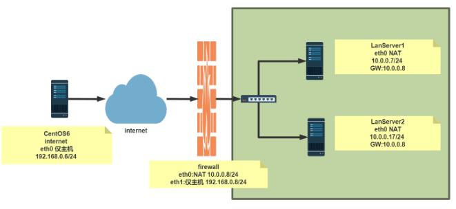

Linux: Linux 防火墙
- TAGS: Linux
Linux 防火墙
本章内容
- 防火墙的概念
- iptables的基本认识
- iptables的组成
- iptables的基本语法
- iptables之forward的概念
- iptables之地址转换法则
- SNAT源地址转换的具体实现
- DNAT目标地址转换的具体实现
- firewalld介绍
- firewalld配置
- 命令rich规则
- nft 基本用法
安全技术和防火墙
安全技术
- 入侵检测系统（Intrusion Detection Systems）：特点是不阻断任何网络访 问，量化、定位来自内外网络的威胁情况，主要以提供报告和事后监督为主， 提供有针对性的指导措施和安全决策依据。一般采用旁路部署方式
- 入侵防御系统（Intrusion Prevention System）：以透明模式工作，分析数 据包的内容如：溢出攻击、拒绝服务攻击、木马、蠕虫、系统漏洞等进行准确 的分析判断，在判定为攻击行为后立即予以阻断，主动而有效的保护网络的安 全，一般采用在线部署方式
- 防火墙（ FireWall）：隔离功能，工作在网络或主机边缘，对进出网络或主 机的数据包基于一定的规则检查，并在匹配某规则时由规则定义的行为进行处 理的一组功能的组件，基本上的实现都是默认情况下关闭所有的通过型访问， 只开放允许访问的策略
防水墙
广泛意义上的防水墙：防水墙（Waterwall），与防火墙相对，是一种防止内部信息泄漏的安全产品。网络、外设接口、存储介质和打印机构成信息泄漏的全部途径。防水墙针对这四种泄密途径，在事前、事中、事后进行全面防护。其与防病毒产品、外部安全产品一起构成完整的网络安全体系。
防火墙的分类
按保护范围划分：
- 主机防火墙：服务范围为当前一台主机
- 网络防火墙：服务范围为防火墙一侧的局域网
按实现方式划分:
- 硬件防火墙：在专用硬件级别实现部分功能的防火墙；另一个部分功能基于软 件实现，如：华为，360，天融信,启明星辰，绿盟，深信服, Checkpoint， NetScreen(Juniper2004年40亿美元收购)等
- 软件防火墙：运行于通用硬件平台之上的防火墙的应用软件，Windows防火 墙,ISA –> Forefront TMG
按网络协议划分：
- 网络层防火墙：OSI模型下四层，又称为包过滤防火墙
- 应用层防火墙/代理服务器：代理网关，OSI模型七层
包过滤防火墙
网络层对数据包进行选择，选择的依据是系统内设置的过滤逻辑，被称为访问控 制列表（ACL），通过检查数据流中每个数据的源地址，目的地址，所用端口号 和协议状态等因素，或他们的组合来确定是否允许该数据包通过
优点：对用户来说透明，处理速度快且易于维护
缺点：无法检查应用层数据，如病毒等
应用层防火墙
应用层防火墙/代理服务型防火墙，也称为代理服务器（Proxy Server)
1将所有跨越防火墙的网络通信链路分为两段
内外网用户的访问都是通过代理服务器上的“链接”来实现
优点：在应用层对数据进行检查，比较安全 缺点：增加防火墙的负载
提示：现实生产环境中所使用的防火墙一般都是二者结合体，即先检查网络数据， 通过之后再送到应用层去检查
网络架构

Linux 防火墙的基本认识
Netfilter
Linux防火墙是由Netfilter组件提供的，Netfilter工作在内核空间，集成在 linux内核中
Netfilter 是Linux 2.4.x之后新一代的Linux防火墙机制，是linux内核的一个 子系统。Netfilter采用模块化设计，具有良好的可扩充性，提供扩展各种网络 服务的结构化底层框架。Netfilter与IP协议栈是无缝契合，并允许对数据报进 行过滤、地址转换、处理等操作
Netfilter官网文档：https://netfilter.org/documentation/
[root@centos8 ~]#grep -m 10 NETFILTER /boot/config-4.18.0-193.el8.x86_64 CONFIG_NETFILTER=y CONFIG_NETFILTER_ADVANCED=y CONFIG_BRIDGE_NETFILTER=m CONFIG_NETFILTER_INGRESS=y CONFIG_NETFILTER_NETLINK=m CONFIG_NETFILTER_FAMILY_BRIDGE=y CONFIG_NETFILTER_FAMILY_ARP=y # CONFIG_NETFILTER_NETLINK_ACCT is not set CONFIG_NETFILTER_NETLINK_QUEUE=m CONFIG_NETFILTER_NETLINK_LOG=m [root@centos7 ~]#grep -m 10 NETFILTER /boot/config-3.10.0-1127.el7.x86_64 CONFIG_NETFILTER=y # CONFIG_NETFILTER_DEBUG is not set CONFIG_NETFILTER_ADVANCED=y CONFIG_BRIDGE_NETFILTER=m CONFIG_NETFILTER_NETLINK=m CONFIG_NETFILTER_NETLINK_ACCT=m CONFIG_NETFILTER_NETLINK_QUEUE=m CONFIG_NETFILTER_NETLINK_LOG=m CONFIG_NETFILTER_NETLINK_QUEUE_CT=y CONFIG_NETFILTER_SYNPROXY=m [root@centos6 ~]#grep -m 10 NETFILTER /boot/config-2.6.32-754.el6.x86_64 CONFIG_NETFILTER=y # CONFIG_NETFILTER_DEBUG is not set CONFIG_NETFILTER_ADVANCED=y CONFIG_BRIDGE_NETFILTER=y CONFIG_NETFILTER_NETLINK=m CONFIG_NETFILTER_NETLINK_QUEUE=m CONFIG_NETFILTER_NETLINK_LOG=m CONFIG_NETFILTER_TPROXY=m CONFIG_NETFILTER_XTABLES=y CONFIG_NETFILTER_XT_TARGET_AUDIT=m [root@ubuntu2004 ~]#grep -m 10 NETFILTER /boot/config-5.4.0-33-generic CONFIG_NETFILTER=y CONFIG_NETFILTER_ADVANCED=y CONFIG_BRIDGE_NETFILTER=m CONFIG_NETFILTER_INGRESS=y CONFIG_NETFILTER_NETLINK=m CONFIG_NETFILTER_FAMILY_BRIDGE=y CONFIG_NETFILTER_FAMILY_ARP=y CONFIG_NETFILTER_NETLINK_ACCT=m CONFIG_NETFILTER_NETLINK_QUEUE=m CONFIG_NETFILTER_NETLINK_LOG=m [root@ubuntu1804 ~]#grep -m 10 NETFILTER /boot/config-4.15.0-29-generic CONFIG_NETFILTER=y CONFIG_NETFILTER_ADVANCED=y CONFIG_BRIDGE_NETFILTER=m CONFIG_NETFILTER_INGRESS=y CONFIG_NETFILTER_NETLINK=m CONFIG_NETFILTER_NETLINK_ACCT=m CONFIG_NETFILTER_NETLINK_QUEUE=m CONFIG_NETFILTER_NETLINK_LOG=m CONFIG_NETFILTER_NETLINK_GLUE_CT=y CONFIG_NETFILTER_SYNPROXY=m
防火墙工具介绍
iptables
由软件包iptables提供的命令行工具，工作在用户空间，用来编写规则，写好的 规则被送往netfilter，告诉内核如何去处理信息包
[root@centos8 ~]#rpm -qi iptables [root@centos8 ~]# iptables --version iptables v1.8.2 (nf_tables) [root@centos8 ~]#ll /usr/sbin/iptables lrwxrwxrwx. 1 root root 17 May 11 2019 /usr/sbin/iptables -> xtables-nft-multi [root@centos7 ~]#ll /usr/sbin/iptables lrwxrwxrwx. 1 root root 13 Dec 9 2018 /usr/sbin/iptables -> xtables-multi [root@centos7 ~]# iptables --version iptables v1.4.21 [root@centos6 ~]#iptables --version iptables v1.4.7 [root@centos6 ~]#ll /sbin/iptables lrwxrwxrwx. 1 root root 33 Dec 12 2018 /sbin/iptables ->/etc/alternatives/iptables.x86_64 [root@centos6 ~]#ll /etc/alternatives/iptables.x86_64 lrwxrwxrwx. 1 root root 20 Dec 12 2018 /etc/alternatives/iptables.x86_64 ->/sbin/iptables-1.4.7 [root@centos6 ~]#ll /sbin/iptables lrwxrwxrwx. 1 root root 33 Dec 12 2018 /sbin/iptables -> /etc/alternatives/iptables.x86_64
范例：安装iptables的service包
[root@centos8 ~]#dnf -y install iptables-services [root@centos8 ~]#rpm -ql iptables-services /etc/sysconfig/ip6tables /etc/sysconfig/iptables /usr/lib/systemd/system/ip6tables.service /usr/lib/systemd/system/iptables.service /usr/libexec/initscripts/legacy-actions/ip6tables /usr/libexec/initscripts/legacy-actions/ip6tables/panic /usr/libexec/initscripts/legacy-actions/ip6tables/save /usr/libexec/initscripts/legacy-actions/iptables /usr/libexec/initscripts/legacy-actions/iptables/panic /usr/libexec/initscripts/legacy-actions/iptables/save /usr/libexec/iptables /usr/libexec/iptables/ip6tables.init /usr/libexec/iptables/iptables.init
firewalld
从CentOS 7 版开始引入了新的前端管理工具 软件包：
- firewalld
- firewalld-config(图形化)
管理工具：
- firewall-cmd 命令行工具
- firewall-config 图形工作
nftables
此软件是CentOS 8 新特性,Nftables最初在法国巴黎的Netfilter Workshop 2008上发表，然后由长期的netfilter核心团队成员和项目负责人Patrick McHardy于2009年3月发布。它在2013年末合并到Linux内核中，自2014年以来已 在内核3.13中可用。
它重用了netfilter框架的许多部分，例如连接跟踪和NAT功能。它还保留了命名 法和基本iptables设计的几个部分，例如表，链和规则。就像iptables一样，表 充当链的容器，并且链包含单独的规则，这些规则可以执行操作，例如丢弃数据 包，移至下一个规则或跳至新链。
从用户的角度来看，nftables添加了一个名为nft的新工具，该工具替代了 iptables，arptables和ebtables中的所有其他工具。从体系结构的角度来看， 它还替换了内核中处理数据包过滤规则集运行时评估的那些部分。
范例：查看软件包
[root@centos8 ~]#rpm -qi nftables Name : nftables Epoch : 1 Version : 0.9.0 Release : 8.el8 Architecture: x86_64 Install Date: Wed 25 Sep 2019 09:29:06 PM CST Group : Unspecified Size : 758622 License : GPLv2 Signature : RSA/SHA256, Tue 02 Jul 2019 08:19:09 AM CST, Key ID 05b555b38483c65d Source RPM : nftables-0.9.0-8.el8.src.rpm Build Date : Sat 11 May 2019 11:06:46 PM CST Build Host : x86-01.mbox.centos.org Relocations : (not relocatable) Packager : CentOS Buildsys <bugs@centos.org> Vendor : CentOS URL : http://netfilter.org/projects/nftables/ Summary : Netfilter Tables userspace utillites Description : Netfilter Tables userspace utilities.
范例：CentOS 8 支持三种防火墙服务
[root@centos8 ~]#systemctl status iptables.service [root@centos8 ~]#systemctl status firewalld.service [root@centos8 ~]#systemctl status nftables.service
netfilter 中五个勾子函数和报文流向
Netfilter在内核中选取五个位置放了五个hook(勾子) function(INPUT、OUTPUT、 FORWARD、PREROUTING、POSTROUTING)，而这五个hook function向用户开放，用 户可以通过一个命令工具（iptables）向其写入规则
由信息过滤表（table）组成，包含控制IP包处理的规则集（rules），规则被分 组放在链（chain）上
提示：从 Linux kernel 4.2 版以后，Netfilter 在prerouting 前加了一个 ingress勾子函数。可以使用这个新的入口挂钩来过滤来自第2层的流量，这个新 挂钩比预路由要早，基本上是tc 命令（流量控制工具）的替代品
三种报文流向
- 流入本机：PREROUTING –> INPUT–>用户空间进程
- 流出本机：用户空间进程 –>OUTPUT–> POSTROUTING
- 转发：PREROUTING –> FORWARD –> POSTROUTING
iptables的组成
iptables由五个表table和五个链chain以及一些规则组成
链 chain：
- 内置链：每个内置链对应于一个钩子函数
- 自定义链：用于对内置链进行扩展或补充，可实现更灵活的规则组织管理机制；只有Hook钩子调用自定义链时，才生效
五个内置链chain:
INPUT,OUTPUT,FORWARD,PREROUTING,POSTROUTING #在不同通信位置加以区别 #input接收、output本机发送、forward本机转发、prerouting路由之前、postrouting路由发生之后
五个表table： filter、nat、mangle、raw、security
- filter表：过滤规则表，根据预定义的规则过滤符合条件的数据包,默认表
- nat表：network address translation 地址转换规则表
- mangle：修改数据标记位规则表
- raw：关闭启用的连接跟踪机制，加快封包穿越防火墙速度
- security：用于强制访问控制（MAC）网络规则，由Linux安全模块（如SELinux）实现
优先级由高到低的顺序为：
security -->raw-->mangle-->nat-->filter
表和链对应关系

raw ：PREROUTING， OUTPUT mangle：PREROUTING，INPUT，FORWARD，OUTPUT，POSTROUTING nat ：PREROUTING，[INPUT，]OUTPUT，POSTROUTING # centos6上少支持了INPUT链，跟版本有关 filter：INPUT，FORWARD，OUTPUT
数据包过滤匹配流程
内核中数据包的传输过程
- 当一个数据包进入网卡时，数据包首先进入PREROUTING链，内核根据数据包目 的IP判断是否需要转送出去
- 如果数据包是进入本机的，数据包就会沿着图向下移动，到达INPUT链。数据 包到达INPUT链后，任何进程都会收到它。本机上运行的程序可以发送数据包， 这些数据包经过OUTPUT链，然后到达POSTROUTING链输出
- 如果数据包是要转发出去的，且内核允许转发，数据包就会向右移动，经过 FORWARD链，然后到达POSTROUTING链输出
范例：表和链对应关系
# filter表默认，支持INPUT，FORWARD，OUTPUT root@centos8 ~]#iptables -vnL -t filter Chain INPUT (policy ACCEPT 0 packets, 0 bytes) pkts bytes target prot opt in out source destination Chain FORWARD (policy ACCEPT 0 packets, 0 bytes) pkts bytes target prot opt in out source destination Chain OUTPUT (policy ACCEPT 0 packets, 0 bytes) pkts bytes target prot opt in out source destination # nat表，支持PREROUTING，INPUT，OUTPUT，POSTROUTING [root@centos8 ~]#iptables -vnL -t nat Chain PREROUTING (policy ACCEPT 0 packets, 0 bytes) Chain INPUT (policy ACCEPT 0 packets, 0 bytes) Chain POSTROUTING (policy ACCEPT 0 packets, 0 bytes) Chain OUTPUT (policy ACCEPT 0 packets, 0 bytes) # mangle表，支持PREROUTING，INPUT，FORWARD，OUTPUT，POSTROUTING [root@centos8 ~]#iptables -vnL -t mangle Chain PREROUTING (policy ACCEPT 0 packets, 0 bytes) Chain INPUT (policy ACCEPT 0 packets, 0 bytes) Chain FORWARD (policy ACCEPT 0 packets, 0 bytes) Chain OUTPUT (policy ACCEPT 0 packets, 0 bytes) Chain POSTROUTING (policy ACCEPT 0 packets, 0 bytes) # raw表，支持PREROUTING， OUTPUT [root@centos8 ~]#iptables -vnL -t raw Chain PREROUTING (policy ACCEPT 0 packets, 0 bytes) Chain OUTPUT (policy ACCEPT 0 packets, 0 bytes) # security表，支持IPUT, FORWARD, OUTPUT [root@centos8 ~]#iptables -vnL -t security Chain INPUT (policy ACCEPT 0 packets, 0 bytes) Chain FORWARD (policy ACCEPT 0 packets, 0 bytes) Chain OUTPUT (policy ACCEPT 0 packets, 0 bytes) #CentOS 6 nat表不支持INPUT链 [root@centos6 ~]#iptables -vnL -t nat Chain PREROUTING (policy ACCEPT 0 packets, 0 bytes) Chain POSTROUTING (policy ACCEPT 0 packets, 0 bytes) Chain OUTPUT (policy ACCEPT 0 packets, 0 bytes)
netfilter 完整流程

iptables
iptables 规则说明
iptables 规则组成
规则rule：根据规则的匹配条件尝试匹配报文，对匹配成功的报文根据规则定义 的处理动作作出处理，规则在链接上的次序即为其检查时的生效次序
匹配条件：默认为与条件，同时满足
- 基本匹配：IP，端口，TCP的Flags（SYN,ACK等）
- 扩展匹配：通过复杂高级功能匹配
处理动作：称为target，跳转目标
- 内建处理动作：ACCEPT,DROP,REJECT,SNAT,DNAT,MASQUERADE,MARK,LOG…
- 自定义处理动作：自定义chain，利用分类管理复杂情形
规则要添加在链上，才生效；添加在自定义链上不会自动生效
范例：处理动作
# 内建处理动作 ACCEPT ：允许数据包通过 DROP ：丢弃数据包 REJECT ：拒绝数据包，同时给发送者发送没有接受的通知 RETURN ：结束当前返回调用链； REDIRECT ：端口重定向； LOG ：记录日志； MARK ：做防火墙标记； DNAT ：目标地址转换； SNAT ：源地址转换； MASQUERADE：地址伪装；关闭 自定义链 ： -j WEB_CHAIN # 关联内置链中，自定义链才生效
iptables规则添加时考量点
- 要实现哪种功能：判断添加在哪张表上
- 报文流经的路径：判断添加在哪个链上
- 报文的流向：判断源和目的
- 匹配规则：业务需要
环境准备(禁用默认防火墙规则)
默认防火墙有很多自定义规则初期不好理解
Centos 7，8：
systemctl stop firewalld.service systemctl disable firewalld. service 或者 systemctl disable --now firewalld.service
Centos6：
service iptables stop chkconfig iptables off
iptables 用法说明
帮助：man 8 iptables 格式：
iptables [-t table] {-A|-C|-D} chain rule-specification
iptables [-t table] -I chain [rulenum] rule-specification
iptables [-t table] -R chain rulenum rule-specification
iptables [-t table] -D chain rulenum
iptables [-t table] -S [chain [rulenum]]
iptables [-t table] {-F|-L|-Z} [chain [rulenum]] [options...]
iptables [-t table] -N chain
iptables [-t table] -X [chain]
iptables [-t table] -P chain target
iptables [-t table] -E old-chain-name new-chain-name
rule-specification = [matches...] [target]
match = -m matchname [per-match-options]
target = -j targetname [per-target-options]
范例：Filter表中INPUT规则
iptables命令格式详解：
iptables [-t table] SUBCOMMAND chain [-m matchname [per-match-options]] -j targetname [per-target-options]
1、-t table：指定表
raw, mangle, nat, [filter]默认
2、SUBCOMMAND：子命令 链管理类：
-N：new, 自定义一条新的规则链 -E：重命名自定义链；引用计数不为0的自定义链不能够被重命名，也不能被删除 -X：delete，删除自定义的空的规则链 -P：Policy，设置默认策略；对filter表中的链而言，其默认策略有：ACCEPT：接受, DROP：丢弃。(不建议修改默认规则，可能默认改成DROP，iptables -F清空后无法再连接服务器)
范例：创建自定义链实现WEB的访问控制
[root@centos8 ~]#iptables -N web_chain # 创建自定义链，默认在filter表中 [root@centos8 ~]#iptables -N web_chain -t nat # 在nat表中，创建自定义链 [root@centos8 ~]#iptables -X web_chain -t nat # 删除nat表中的web_chain链 [root@centos8 ~]#iptables -E web_chain WEB_CHAIN # 修改链名 [root@centos8 ~]#iptables -A WEB_CHAIN -s 10.0.0.6 -p tcp -m multiport --dports 80,443 -j REJECT [root@centos8 ~]#iptables -R WEB_CHAIN 1 -s 10.0.0.6 -p tcp -m multiport --dports 80,443,8080 -j REJECT [root@centos8 ~]#iptables -vnL WEB_CHAIN Chain WEB_CHAIN (1 references) pkts bytes target prot opt in out source destination 1 60 REJECT tcp -- * * 10.0.0.6 0.0.0.0/0 multiport dports 80,443,8080 reject-with icmp-port-unreachable [root@centos8 ~]#iptables -IINPUT 3 -s 10.0.0.0/24 -j WEB_CHAINN # 关联内置链中，自定义链才生效 [root@centos8 ~]#iptables -IWEB_CHAIN 1 -s 10.0.0.6 -j RETURN # -j RETURN 如果满足这一条，下面的规则不执行了 [root@centos6 ~]#curl 10.0.0.8 centos8 website [root@centos6 ~]#curl 10.0.0.8 centos8 website [root@centos6 ~]#ping -c1 10.0.0.8 #删除自定义链，清空自定义链规则再删除和创建的顺序相反 [root@centos8 ~]#iptables -X WEB_CHAIN iptables v1.8.2 (nf_tables): CHAIN_USER_DEL failed (Device or resource busy):chain WEB_CHAIN [root@centos8 ~]#iptables -F WEB_CHAIN [root@centos8 ~]#iptables -X WEB_CHAIN iptables v1.8.2 (nf_tables): CHAIN_USER_DEL failed (Device or resource busy): chain WEB_CHAIN [root@centos8 ~]#iptables -D INPUT 1 [root@centos8 ~]#iptables -X WEB_CHAIN
查看类：
-L：list, 列出指定链上的所有规则，本选项须置后 -n：numberic，以数字格式显示地址和端口号 -v：verbose，详细信息 -vv 更详细 -x：exactly，显示计数器结果的精确值,而非单位转换后的易读值 --line-numbers：显示规则的序号 -S selected,以iptables-save 命令格式显示链上规则
常用组合：
-vnL #详细表的规则链 -vvnxL --line-numbers #显示规则编号
规则管理类：
-A：append，追加
-I：insert, 插入，要指明插入至的规则编号，默认为第一条。如iptables -I INPUT 2 -s 10.0.0.6 ! -p icmp -j ACCEPT
-D：delete，删除
(1) 指明规则序号 iptables -D 2
(2) 指明规则本身
-R：replace，替换指定链上的指定规则编号
-F：flush，清空指定的规则链。不指定链则清理所有规则链。注意链的默认规则不会清理，使用-P修改
-Z：zero，置零
iptables的每条规则都有两个计数器
(1) 匹配到的报文的个数
(2) 匹配到的所有报文的大小之和
范例：
[root@centos8 ~]#iptables -F OUTPUT iptables -F ：清空指定的规则链。 iptables -X ：delete，删除自定义的空的规则链 iptables -Z ：置零,包传输统计清0,-vLn可看到 iptables -R INPUT 2 -s 10.0.0.1 -j REJECT # 替换第2条规则
3、chain：
PREROUTING，INPUT，FORWARD，OUTPUT，POSTROUTING
4、匹配条件
- 基本：通用的，PARAMETERS
- 扩展：需加载模块，MATCH EXTENTIONS
5、处理动作：
-j targetname [per-target-options]
简单动作：
ACCEPT ：允许数据包通过 DROP ：丢弃数据包
扩展动作：
REJECT ：拒绝数据包，同时给发送者发送没有接受的通知 --reject-with:icmp-port-unreachable默认 RETURN ：结束当前返回调用链； REDIRECT ：端口重定向； LOG ：记录日志； MARK ：做防火墙标记； DNAT ：目标地址转换； SNAT ：源地址转换； MASQUERADE：地址伪装；关闭 自定义链 ： -j WEB_CHAIN # 关联内置链中，自定义链才生效
iptables 基本匹配条件
基本匹配条件：无需加载模块，由iptables/netfilter自行提供
[!] -s, --source address[/mask][,...]：源IP地址或者不连续的IP地址，!感叹号取反。
[!] -d, --destination address[/mask][,...]：目标IP地址或者不连续的IP地址
[!] -p, --protocol protocol：指定协议，可使用数字如0（all）
protocol: tcp, udp, icmp, icmpv6, udplite,esp, ah, sctp, mh or“all“
参看：/etc/protocols
[!] -i, --in-interface name：报文流入的接口；只能应用于数据报文流入环节，只应用于INPUT、FORWARD、PREROUTING链
[!] -o, --out-interface name：报文流出的接口；只能应用于数据报文流出的环节，只应用于FORWARD、OUTPUT、POSTROUTING链
范例：
[root@centos8 ~]#iptables -A INPUT -s 10.0.0.6,10.0.0.10 -j REJECT [root@centos8 ~]#iptables -I INPUT -i lo -j ACCEPT # -I 插入规则 这里省略了1 [root@centos8 ~]#curl 127.0.0.1 10.0.0.8 [root@centos8 ~]#curl 10.0.0.8 10.0.0.8 # 不是icmp协议的规则允许连接 [root@centos8 ~]#iptables -I INPUT 2 -s 10.0.0.6 ! -p icmp -j ACCEPT # 在第2条前面插入殊条件规则
iptables 扩展匹配条件
扩展匹配条件：需要加载扩展模块（ /usr/lib64/xtables/*.so ），方可生效
扩展模块的查看帮助 ：man iptables-extensions
扩展匹配条件：
- 隐式扩展
- 显式扩展
隐式扩展
iptables
在使用 -p 选项指明了特定的协议时，无需再用-m选项指明扩展模块的扩展机制，不需要手动加载扩展模块
如： -p tcp 知道是tcp协议模块了就不需要指明 -m tcp -p tcp 了
tcp 协议的扩展选项
[!] --source-port, --sport port[:port]：匹配报文源端口,可为端口连续范围
[!] --destination-port,--dport port[:port]：匹配报文目标端口,可为连续范围
[!] --tcp-flags mask comp
mask 需检查的标志位列表，用,分隔 , 例如 SYN,ACK,FIN,RST
comp 在mask列表中必须为1的标志位列表，无指定则必须为0，用,分隔tcp协议的扩展选项
[!] --syn：用于匹配第一次握手, 相当于：--tcp-flags SYN,ACK,FIN,RST SYN
范例：
--tcp-flags SYN,ACK,FIN,RST SYN # 表示要检查的标志位为SYN,ACK,FIN,RST四个，其中SYN必须为1，余下的必须为0，第一次握手 --tcp-flags SYN,ACK,FIN,RST SYN,ACK # 第二次握手 #错误包 --tcp-flags ALL ALL --tcp_flags ALL NONE
[!] --syn ：用于匹配第一次握手, 相当于：–tcp-flags SYN,ACK,FIN,RST SYN
udp 协议的扩展选项
[!] --source-port, --sport port[:port]：匹配报文的源端口或端口范围 [!] --destination-port,--dport port[:port]：匹配报文的目标端口或端口范围
icmp 协议的扩展选项
[!] --icmp-type {type[/code]|typename}
type/code
0/0 echo-reply icmp应答
8/0 echo-request icmp请求
范例：
[root@centos8 ~]#iptables -A INPUT -s 10.0.0.6 -p tcp --dport 21:23 -j REJECT [root@centos8 ~]#ipn Chain INPUT (policy ACCEPT 0 packets, 0 bytes) num pkts bytes target prot opt in out source destination 1 1 60 REJECT tcp -- * * 10.0.0.6 0.0.0.0/0 tcp dpts:21:23 reject-with icmp-port-unreachable Chain FORWARD (policy ACCEPT 0 packets, 0 bytes) num pkts bytes target prot opt in out source destination Chain OUTPUT (policy ACCEPT 0 packets, 0 bytes) num pkts bytes target prot opt in out source destination
范例：TCP第一次握手拒绝
[root@centos8 ~]#iptables -A INPUT -p tcp --syn -j REJECT
范例：10.0.0.6的ping的请求包拒绝
iptables -I INPUT -s 10.0.0.6 -p icmp --icmp-type 8 -j REJECT
显式扩展及相关模块
显示扩展即必须使用 -m 选项指明要调用的扩展模块名称，需要手动加载扩展模块
[-m matchname [per-match-options]]
扩展模块的使用帮助：
- CentOS 7,8: man iptables-extensions
- CentOS 6: man iptables
- multiport扩展
以离散方式定义多端口匹配,最多指定15个端口
#指定多个源端口，连续端口:冒号分隔，不连续端口,逗号分隔 [!] --source-ports,--sports port[,port|,port:port]... # 指定多个目标端口 [!] --destination-ports,--dports port[,port|,port:port]... #多个源或目标端 [!] --ports port[,port|,port:port]...
范例：
[root@centos8 ~]#iptables -A INPUT -s 172.16.0.0/16 -d 172.16.100.10 -p tcp -m multiport --dports 20:22,80 -j ACCEPT [root@centos8 ~]#iptables -A INPUT -s 10.0.0.6 -p tcp -m multiport --dports 445,139 -j REJECT [root@centos8 ~]#ipn Chain INPUT (policy ACCEPT 0 packets, 0 bytes) num pkts bytes target prot opt in out source destination 1 2 120 REJECT tcp -- * * 10.0.0.6 0.0.0.0/0 multiport dports 445,139 reject-with icmp-port-unreachable Chain FORWARD (policy ACCEPT 0 packets, 0 bytes) num pkts bytes target prot opt in out source destination Chain OUTPUT (policy ACCEPT 0 packets, 0 bytes) num pkts bytes target prot opt in out source destination
- iprange扩展
指明连续的（但一般不是整个网络）ip地址范围
[!] --src-range from[-to] 源IP地址范围 [!] --dst-range from[-to] 目标IP地址范围
范例：源ip从172.16.1.5到172.16.1.10访问80端口拒绝
iptables -A INPUT -d 172.16.1.100 -p tcp --dport 80 -m iprange --src-range 172.16.1.5-172.16.1.10 -j DROP
- mac扩展
mac 模块可以指明源MAC地址,，适用于：PREROUTING, FORWARD，INPUT chains
[!] --mac-source XX:XX:XX:XX:XX:XX # 目标地址mac地址不是自己就连不进来，所以没有目标mac地址选项
范例：
iptables -A INPUT -s 172.16.0.100 -m mac --mac-source 00:50:56:12:34:56 -j ACCEPT iptables -A INPUT -s 172.16.0.100 -j REJECT
- string扩展
对报文中的应用层数据做字符串模式匹配检测
--algo {bm|kmp} 字符串匹配检测算法 bm：Boyer-Moore kmp：Knuth-Pratt-Morris --from offset 开始偏移 --to offset 结束偏移 [!] --string pattern 要检测的字符串模式 [!] --hex-string pattern要检测字符串模式，16进制格式范例：响应端，分析访问页面中有google字符的拒绝访问
以太网MAC帧格式
iptables -A OUTPUT -p tcp --sport 80 -m string --algo bm --from 62 --string "google" -j REJECT # 前62个字节为固定首部信息
- time扩展
注意：CentOS 8 此模块有问题
根据将报文到达的时间与指定的时间范围进行匹配
--datestart YYYY[-MM[-DD[Thh[:mm[:ss]]]]] 日期 --datestop YYYY[-MM[-DD[Thh[:mm[:ss]]]]] --timestart hh:mm[:ss] 时间 --timestop hh:mm[:ss] [!] --monthdays day[,day...] 每个月的几号 [!] --weekdays day[,day...] 星期几，1 – 7 分别表示星期一到星期日 --kerneltz：内核时区（当地时间），不建议使用；CentOS 7 系统默认为 UTC 注意： centos6 不支持kerneltz ，--localtz指定本地时区(默认)
范例: CentOS 8 的time模块问题
[root@centos8 ~]#rpm -ql iptables |grep time /usr/lib64/xtables/libxt_time.so [root@centos8 ~]#iptables -A INPUT -m time --timestart 12:30 --timestop 13:30 -j ACCEPT # UTC格林时间12：30到13：30，中国时间20:30到21：30 iptables v1.8.4 (nf_tables): Couldn't load match `time':No such file or directory
范例: 关于 –kerneltz 选项
[root@centos8 ~]#man iptables-extensions The caveat with the kernel timezone is that Linux distributions may ignore to set the kernel timezone,and instead only set the system time. Even if a particular distribution does set the timezone at boot,it is usually does not keep the kernel timezone offset - which is what changes on DST - up to date. ntpd will not touch the kernel timezone, so running it will not resolve the issue. As such,one may encounter a timezone that is always +0000, or one that is wrong half of the time of the year. As such,using --kerneltz is highly discouraged.范例：周六周日14:30到18:30访问172.16.100.10的80端口的拒绝
[root@centos7 ~]#iptables -A INPUT -s 172.16.0.0/16 -d 172.16.100.10 -p tcp --dport 80 -m time --timestart 14:30 --timestop 18:30 --weekdays Sat,Sun --kerneltz -j DROP # --kerneltz 当地时间不推荐使用
- connlimit扩展
根据每客户端IP做并发连接数数量匹配
可防止Dos(Denial of Service，拒绝服务)攻击
--connlimit-upto N #连接的数量小于等于N时匹配 --connlimit-above N #连接的数量大于N时匹配
范例：访问22端口连接数大于2个时拒绝连接
#1.利用connlimit模块将单IP的并发设置为2；会误杀使用NAT上网的用户，可以根据实际情况增大该值 iptables -A INPUT -d 172.16.100.10 -p tcp --dport 22 -m connlimit --connlimit-above 2 -j REJECT #2.利用recent和state模块限制单IP在300s内只能与本机建立2个新连接。被限制五分钟后即可恢复访问。 iptables -I INPUT -p tcp --dport 22 -m state --state NEW -m recent --set --name SSH #记录访问tcp 22端口的新连接，记录名称为SSH。--set 记录数据包的来源IP，如果IP已经存在将更新已经存在的条目 iptables -I INPUT -p tcp --dport 22 -m state --state NEW -m recent --update --seconds 300 --hitcount 3 --name SSH -j LOG --log-prefix "SSH Attach: " iptables -I INPUT -p tcp --dport 22 -m state --state NEW -m recent --update --seconds 300 --hitcount 3 --name SSH -j DROP #SSH记录中的IP，300s内发起超过3次连接则拒绝此IP的连接。 # --update 是指每次建立连接都更新列表； # --seconds必须与--rcheck或者--update同时使用 # --hitcount必须与--rcheck或者--update同时使用 #3.iptables的记录：/proc/net/xt_recent/SSH
- limit扩展
基于收发报文的速率做匹配 , 令牌桶过滤器
--limit-burst number #前多少个包不限制 --limit #[/second|/minute|/hour|/day]
范例：从第六个包开始限制，每分钟允许10个包
iptables -I INPUT -d 172.16.100.10 -p icmp --icmp-type 8 -m limit --limit 10/minute --limit-burst 5 -j ACCEPT iptables -I INPUT 2 -p icmp -j REJECT
范例：
[root@centos8 ~]#iptables -A INPUT -p icmp -m limit --limit-burst 10 --limit 20/minute -j ACCEPT [root@centos8 ~]#iptables -A INPUT -p icmp -j REJECT [root@centos6 ~]#ping 10.0.0.8 PING 192.168.39.8 (192.168.39.8) 56(84) bytes of data. 64 bytes from 192.168.39.8: icmp_seq=1 ttl=64 time=0.779 ms 64 bytes from 192.168.39.8: icmp_seq=2 ttl=64 time=0.436 ms 64 bytes from 192.168.39.8: icmp_seq=3 ttl=64 time=0.774 ms 64 bytes from 192.168.39.8: icmp_seq=4 ttl=64 time=0.391 ms 64 bytes from 192.168.39.8: icmp_seq=5 ttl=64 time=0.441 ms 64 bytes from 192.168.39.8: icmp_seq=6 ttl=64 time=0.356 ms 64 bytes from 192.168.39.8: icmp_seq=7 ttl=64 time=0.553 ms 64 bytes from 192.168.39.8: icmp_seq=8 ttl=64 time=0.458 ms 64 bytes from 192.168.39.8: icmp_seq=9 ttl=64 time=0.459 ms 64 bytes from 192.168.39.8: icmp_seq=10 ttl=64 time=0.479 ms 64 bytes from 192.168.39.8: icmp_seq=11 ttl=64 time=0.450 ms 64 bytes from 192.168.39.8: icmp_seq=12 ttl=64 time=0.471 ms 64 bytes from 192.168.39.8: icmp_seq=13 ttl=64 time=0.531 ms 64 bytes from 192.168.39.8: icmp_seq=14 ttl=64 time=0.444 ms From 192.168.39.8 icmp_seq=15 Destination Port Unreachable 64 bytes from 192.168.39.8: icmp_seq=16 ttl=64 time=0.668 ms From 192.168.39.8 icmp_seq=17 Destination Port Unreachable From 192.168.39.8 icmp_seq=18 Destination Port Unreachable 64 bytes from 192.168.39.8: icmp_seq=19 ttl=64 time=0.692 ms From 192.168.39.8 icmp_seq=20 Destination Port Unreachable From 192.168.39.8 icmp_seq=21 Destination Port Unreachable 64 bytes from 192.168.39.8: icmp_seq=22 ttl=64 time=0.651 ms
- state扩展
state 扩展模块，可以根据”连接追踪机制“去检查连接的状态，较耗资源
conntrack机制：追踪本机上的请求和响应之间的关系
状态类型：
- NEW：新发出请求；连接追踪信息库中不存在此连接的相关信息条目，因此，将其识别为第一次发出的请求
- ESTABLISHED：NEW状态之后，连接追踪信息库中为其建立的条目失效之前期间内所进行的通信状态
- RELATED：新发起的但与已有连接相关联的连接，如：ftp协议中的数据连接与命令连接之间的关系
- INVALID：无效的连接，如flag标记不正确
- UNTRACKED：未进行追踪的连接，如：raw表中关闭追踪
已经追踪到的并记录下来的连接信息库
[root@centos8 ~]#cat /proc/net/nf_conntrack ipv4 2 tcp 6 431325 ESTABLISHED src=10.0.0.7 dst=10.0.0.8 sport=49900 dport=80 src=10.0.0.8 dst=10.0.0.7 sport=80 dport=49900 [ASSURED] mark=0 zone=0 use=2 ipv4 2 tcp 6 431325 ESTABLISHED src=10.0.0.7 dst=10.0.0.8 sport=49886 dport=80 src=10.0.0.8 dst=10.0.0.7 sport=80 dport=49886 [ASSURED] mark=0 zone=0 use=2 ipv4 2 tcp 6 431325 ESTABLISHED src=10.0.0.7 dst=10.0.0.8 sport=49892 dport=80 src=10.0.0.8 dst=10.0.0.7 sport=80 dport=49892 [ASSURED] mark=0 zone=0 use=2 ipv4 2 tcp 6 431325 ESTABLISHED src=10.0.0.7 dst=10.0.0.8 sport=49904 dport=80 src=10.0.0.8 dst=10.0.0.7 sport=80 dport=49904 [ASSURED] mark=0 zone=0 use=2 ipv4 2 tcp 6 431325 ESTABLISHED src=10.0.0.7 dst=10.0.0.8 sport=49890 dport=80 src=10.0.0.8 dst=10.0.0.7 sport=80 dport=49890 [ASSURED] mark=0 zone=0 use=2 ipv4 2 tcp 6 431325 ESTABLISHED src=10.0.0.7 dst=10.0.0.8 sport=49888 dport=80 src=10.0.0.8 dst=10.0.0.7 sport=80 dport=49888 [ASSURED] mark=0 zone=0 use=2 ipv4 2 tcp 6 431325 ESTABLISHED src=10.0.0.7 dst=10.0.0.8 sport=49896 dport=80 src=10.0.0.8 dst=10.0.0.7 sport=80 dport=49896 [ASSURED] mark=0 zone=0 use=2 ipv4 2 tcp 6 431325 ESTABLISHED src=10.0.0.7 dst=10.0.0.8 sport=49898 dport=80 src=10.0.0.8 dst=10.0.0.7 sport=80 dport=49898 [ASSURED] mark=0 zone=0 use=2 ipv4 2 tcp 6 431325 ESTABLISHED src=10.0.0.7 dst=10.0.0.8 sport=49894 dport=80 src=10.0.0.8 dst=10.0.0.7 sport=80 dport=49894 [ASSURED] mark=0 zone=0 use=2 ipv4 2 tcp 6 431325 ESTABLISHED src=10.0.0.7 dst=10.0.0.8 sport=49902 dport=80 src=10.0.0.8 dst=10.0.0.7 sport=80 dport=49902 [ASSURED] mark=0 zone=0 use=2
调整连接追踪功能所能够容纳的最大连接数量
[root@centos8 ~]#cat /proc/sys/net/netfilter/nf_conntrack_max 26624 [root@centos8 ~]#cat /proc/sys/net/nf_conntrack_max 26624
查看连接跟踪有多少条目
[root@centos8 ~]#cat /proc/sys/net/netfilter/nf_conntrack_count 10
不同的协议的连接追踪时长
[root@centos8 ~]#ll /proc/sys/net/netfilter/ total 0 -rw-r--r-- 1 root root 0 Mar 19 18:14 nf_conntrack_acct -rw-r--r-- 1 root root 0 Mar 19 18:14 nf_conntrack_buckets -rw-r--r-- 1 root root 0 Mar 19 18:14 nf_conntrack_checksum -r--r--r-- 1 root root 0 Mar 19 18:14 nf_conntrack_count -rw-r--r-- 1 root root 0 Mar 19 18:14 nf_conntrack_dccp_loose -rw-r--r-- 1 root root 0 Mar 19 18:14 nf_conntrack_dccp_timeout_closereq -rw-r--r-- 1 root root 0 Mar 19 18:14 nf_conntrack_dccp_timeout_closing -rw-r--r-- 1 root root 0 Mar 19 18:14 nf_conntrack_dccp_timeout_open -rw-r--r-- 1 root root 0 Mar 19 18:14 nf_conntrack_dccp_timeout_partopen -rw-r--r-- 1 root root 0 Mar 19 18:14 nf_conntrack_dccp_timeout_request -rw-r--r-- 1 root root 0 Mar 19 18:14 nf_conntrack_dccp_timeout_respond -rw-r--r-- 1 root root 0 Mar 19 18:14 nf_conntrack_dccp_timeout_timewait -rw-r--r-- 1 root root 0 Mar 19 18:14 nf_conntrack_events -rw-r--r-- 1 root root 0 Mar 19 18:14 nf_conntrack_expect_max -rw-r--r-- 1 root root 0 Mar 19 18:14 nf_conntrack_generic_timeout -rw-r--r-- 1 root root 0 Mar 19 18:14 nf_conntrack_helper -rw-r--r-- 1 root root 0 Mar 19 18:14 nf_conntrack_icmp_timeout -rw-r--r-- 1 root root 0 Mar 19 18:14 nf_conntrack_log_invalid -rw-r--r-- 1 root root 0 Mar 19 18:13 nf_conntrack_max -rw-r--r-- 1 root root 0 Mar 19 18:14 nf_conntrack_sctp_timeout_closed -rw-r--r-- 1 root root 0 Mar 19 18:14 nf_conntrack_sctp_timeout_cookie_echoed -rw-r--r-- 1 root root 0 Mar 19 18:14 nf_conntrack_sctp_timeout_cookie_wait -rw-r--r-- 1 root root 0 Mar 19 18:14 nf_conntrack_sctp_timeout_established -rw-r--r-- 1 root root 0 Mar 19 18:14 nf_conntrack_sctp_timeout_heartbeat_acked -rw-r--r-- 1 root root 0 Mar 19 18:14 nf_conntrack_sctp_timeout_heartbeat_sent -rw-r--r-- 1 root root 0 Mar 19 18:14 nf_conntrack_sctp_timeout_shutdown_ack_sent -rw-r--r-- 1 root root 0 Mar 19 18:14 nf_conntrack_sctp_timeout_shutdown_recd -rw-r--r-- 1 root root 0 Mar 19 18:14 nf_conntrack_sctp_timeout_shutdown_sent -rw-r--r-- 1 root root 0 Mar 19 18:14 nf_conntrack_tcp_be_liberal -rw-r--r-- 1 root root 0 Mar 19 18:14 nf_conntrack_tcp_loose -rw-r--r-- 1 root root 0 Mar 19 18:14 nf_conntrack_tcp_max_retrans -rw-r--r-- 1 root root 0 Mar 19 18:14 nf_conntrack_tcp_timeout_close -rw-r--r-- 1 root root 0 Mar 19 18:14 nf_conntrack_tcp_timeout_close_wait -rw-r--r-- 1 root root 0 Mar 19 18:14 nf_conntrack_tcp_timeout_established -rw-r--r-- 1 root root 0 Mar 19 18:14 nf_conntrack_tcp_timeout_fin_wait -rw-r--r-- 1 root root 0 Mar 19 18:14 nf_conntrack_tcp_timeout_last_ack -rw-r--r-- 1 root root 0 Mar 19 18:14 nf_conntrack_tcp_timeout_max_retrans -rw-r--r-- 1 root root 0 Mar 19 18:14 nf_conntrack_tcp_timeout_syn_recv -rw-r--r-- 1 root root 0 Mar 19 18:14 nf_conntrack_tcp_timeout_syn_sent -rw-r--r-- 1 root root 0 Mar 19 18:14 nf_conntrack_tcp_timeout_time_wait -rw-r--r-- 1 root root 0 Mar 19 18:14 nf_conntrack_tcp_timeout_unacknowledged -rw-r--r-- 1 root root 0 Mar 19 18:14 nf_conntrack_timestamp -rw-r--r-- 1 root root 0 Mar 19 18:14 nf_conntrack_udp_timeout -rw-r--r-- 1 root root 0 Mar 19 18:14 nf_conntrack_udp_timeout_stream dr-xr-xr-x 1 root root 0 Mar 19 18:14 nf_log -rw-r--r-- 1 root root 0 Mar 19 18:14 nf_log_all_netns
说明：
- 连接跟踪，需要加载模块： modprobe nf_conntrack_ipv4
- 当服务器连接多于最大连接数时dmesg 可以观察到 ：kernel: ip_conntrack: table full, dropping packet错误,并且导致建立TCP连接很慢。
- 各种状态的超时后，链接会从表中删除
范例:
[root@centos8 ~]#echo 1 > /proc/sys/net/netfilter/nf_conntrack_max [root@centos8 ~]#tail /var/log/messages Jul 8 10:03:53 centos8 kernel: nf_conntrack: nf_conntrack: table full, dropping packet [root@centos6 ~]#tail /var/log/messages Jul 8 09:51:16 centos6 kernel: nf_conntrack: table full, dropping packet.
连接过多的解决方法两个：
加大nf_conntrack_max 值
vi /etc/sysctl.conf net.nf_conntrack_max = 393216 net.netfilter.nf_conntrack_max = 393216
降低 nf_conntrack timeout时间
vi /etc/sysctl.conf net.netfilter.nf_conntrack_tcp_timeout_established = 300 net.netfilter.nf_conntrack_tcp_timeout_time_wait = 120 net.netfilter.nf_conntrack_tcp_timeout_close_wait = 60 net.netfilter.nf_conntrack_tcp_timeout_fin_wait = 120 iptables -t nat -L -n
格式：
[!] --state state
范例: 不允许10.0.0.7 访问本机,但本机可以访问10.0.0.7
[root@centos8 ~]#iptables -S -P INPUT ACCEPT -P FORWARD ACCEPT -P OUTPUT ACCEPT -A INPUT -s 10.0.0.1/32 -j ACCEPT -A INPUT ! -s 10.0.0.7/32 -m state --state NEW -j ACCEPT -A INPUT -m state --state ESTABLISHED -j ACCEPT -A INPUT -j REJECT --reject-with icmp-port-unreachable
范例：
iptables -A INPUT -d 172.16.1.10 -p tcp -m multiport --dports 22,80 -m state --state NEW,ESTABLISHED -j ACCEPT iptables -A OUTPUT -s 172.16.1.10 -p tcp -m multiport --sports 22,80 -m state --state ESTABLISHED -j ACCEPT [root@centos8 ~]#iptables -A INPUT -m state --state ESTABLISHED -j ACCEPT [root@centos8 ~]#iptables -A INPUT -m state --state NEW -j REJECT
案例：开放被动模式的ftp服务 CentOS 8 此模块有bug
装载ftp连接追踪的专用模块：
跟踪模块路径：/lib/modules/kernelversion/kernel/net/netfilter
vim /etc/sysconfig/iptables-config IPTABLES_MODULES=“nf_conntrack_ftp" modprobe nf_conntrack_ftp
放行请求报文：
命令连接：NEW, ESTABLISHED
数据连接：RELATED, ESTABLISHED
iptables -I INPUT -d LocalIP -p tcp -m state --state ESTABLISHED,RELATED -j ACCEPT iptables -A INPUT -d LocalIP -p tcp --dport 21 -m state --state NEW -j ACCEPT
放行响应报文：
iptables -I OUTPUT -s LocalIP -p tcp -m state --state ESTABLISHED -j ACCEPT
范例：开放被动模式的ftp服务示例
yum install vsftpd systemctl start vsftpd modprobe nf_conntrack_ftp iptables -F iptables -A INPUT -m state --state ESTABLISHED,RELATED -j ACCEPT iptables -A INPUT -p tcp --dport 21 -m state --state NEW -j ACCEPT iptables -A OUTPUT -m state --state ESTABLISHED -j ACCEPT iptables -P INPUT DROP iptables -P OUTPUT DROP iptables -vnL
- mac扩展
范例：
#1、阻止MAC地址为XX:XX:XX:XX:XX:XX主机的所有通信： iptables -A INPUT -m mac --mac-source XX:XX:XX:XX:XX:XX -j DROP iptables -A INPUT -s 192.168.1.3/32 -m mac --mac-source ab:cd:ef:ab:cd:ef -p tcp -m tcp --dport 80 -j ACCEPT #2、允许MAC地址为XX:XX:XX:XX:XX:XX主机访问22端口： iptables -A INPUT -p tcp --destination-port 22 -m mac --mac-source XX:XX:XX:XX:XX:XX -j ACCEPT #3、允许IP地址为192.168.1.21，MAC地址为XX:XX:XX:XX:XX:XX的主机通信，拒绝多有其他主机： iptables -A INPUT -s 192.168.1.21 -m mac --mac-source XX:XX:XX:XX:XX:XX -j ACCEPT iptables -P INPUT DROP #4、可以写脚本限制MAC： iptables -P FORWARD DROP for mac in $(cat ipaddressfile); do iptables -A FORWARD -m mac --mac-source $mac -j ACCEPT done
Target
target 包括以下类型：
自定义链, ACCEPT， DROP， REJECT，RETURN,LOG，SNAT，DNAT，REDIRECT，MASQUERADE ACCEPT ：允许数据包通过 DROP ：丢弃数据包 REJECT ：拒绝数据包，同时给发送者发送没有接受的通知 RETURN ：结束当前返回调用链； REDIRECT ：端口重定向； LOG ：非中断target,本身不拒绝和允许,放在拒绝和允许规则前，并将日志记录在/var/log/messages系统日志中 MARK ：做防火墙标记； DNAT ：目标地址转换； SNAT ：源地址转换； MASQUERADE：地址伪装；关闭 自定义链 ：-j 链名 # 关联内置链中，自定义链才生效 --log-level level 级别： debug，info，notice, warning, error, crit, alert,emerg --log-prefix prefix 日志前缀，用于区别不同的日志，最多29个字符
范例：新发起的请求，记录iptables 规则日志
[root@centos8 ~]#iptables -I INPUT -s 10.0.0.0/24 -p tcp -m multiport --dports 80,21,22,23 -m state --state NEW -j LOG --log-prefix "new connections: " [root@centos8 ~]#tail -f /var/log/messages Mar 19 18:41:07 centos8 kernel: iptables tcp connection: IN=eth0 OUT= MAC=00:0c:29:f8:5d:b7:00:50:56:c0:00:08:08:00 SRC=10.0.0.1 DST=10.0.0.8 LEN=40 TOS=0x00 PREC=0x00 TTL=128 ID=43974 DF PROTO=TCP SPT=9844 DPT=22 WINDOW=4102 RES=0x00 ACK URGP=0 Mar 19 18:41:07 centos8 kernel: new connections: IN=eth0 OUT= MAC=00:0c:29:f8:5d:b7:00:50:56:c0:00:08:08:00 SRC=10.0.0.1 DST=10.0.0.8 LEN=40 TOS=0x00 PREC=0x00 TTL=128 ID=43975 DF PROTO=TCP SPT=9844 DPT=22 WINDOW=4102 RES=0x00 ACK URGP=0 Mar 19 18:41:08 centos8 kernel: new connections: IN=eth0 OUT=
范例：
[root@centos8 ~]#iptables -R INPUT 2 -p tcp --dport 21 -m state --state NEW -j LOG --log-prefix "ftp new link: " [root@centos8 ~]#tail -f /var/log/messages Dec 21 10:02:31 centos8 kernel: ftp new link: IN=eth0 OUT= MAC=00:0c:29:f9:8d:90:00:0c:29:10:8a:b1:08:00 SRC=192.168.39.6 DST=192.168.39.8 LEN=60 TOS=0x00 PREC=0x00 TTL=64 ID=15556 DF PROTO=TCP SPT=53706 DPT=21 WINDOW=14600 RES=0x00 SYN URGP=0
规则优化最佳实践
- 安全放行所有入站和出站的状态为ESTABLISHED状态连接,建议放在第一条，效率更高
- 谨慎放行入站的新请求
- 有特殊目的限制访问功能，要在放行规则之前加以拒绝
- 同类规则（访问同一应用，比如：http），匹配范围小的放在前面，用于特 殊处理
不同类的规则（访问不同应用，一个是http，另一个是mysql），匹配范围大 的放在前面，效率更高
-s 10.0.0.6 -p tcp --dport 3306 -j REJECT -s 172.16.0.0/16 -p tcp --dport 80 -j REJECT
- 应该将那些可由一条规则能够描述的多个规则合并为一条，减少规则数量,提高检查效率
- 设置默认策略，建议白名单（只放行特定连接）
- iptables -P，不建议，容易出现“自杀现象”
- 规则的最后定义规则做为默认策略，推荐使用，放在最后一条
iptables规则保存
使用iptables命令定义的规则，手动删除之前，其生效期限为kernel存活期限 持久保存规则：
CentOS 7,8
iptables-save > /PATH/TO/SOME_RULES_FILE
CentOS 6
#将规则覆盖保存至/etc/sysconfig/iptables文件中 service iptables save
加载规则
CentOS 7,8 重新载入预存规则文件中规则：
iptables-restore < /PATH/FROM/SOME_RULES_FILE
iptables-restore选项
-n, --noflush：不清除原有规则 -t, --test：仅分析生成规则集，但不提交
CentOS 6：
#会自动从/etc/sysconfig/iptables 重新载入规则 service iptables restart
开机自动重载规则
用脚本保存各iptables命令；让此脚本开机后自动运行
/etc/rc.d/rc.local文件中添加脚本路径 /PATH/TO/SOME_SCRIPT_FILE
用规则文件保存各规则，开机时自动载入此规则文件中的规则
在/etc/rc.d/rc.local文件添加
iptables-restore < /PATH/FROM/IPTABLES_RULES_FILE
定义Unit File, CentOS 7，8 可以安装 iptables-services 实现iptables.service
范例: CentOS 7，8 使用 iptables-services
[root@centos8 ~]#yum -y install iptables-services # centos8不建议安装，和firewalld冲突 [root@centos8 ~]#cp /etc/sysconfig/iptables{,.bak} # 保存现在的规则到文件中方法1 [root@centos8 ~]#/usr/libexec/iptables/iptables.init save # 保存现在的规则到文件中方法2 [root@centos8 ~]#iptables-save > /etc/sysconfig/iptables #开机启动 [root@centos8 ~]#systemctl enable iptables.service [root@centos8 ~]#systemctl mask firewalld.service nftables.service
网络防火墙
iptables/netfilter 利用filter表的FORWARD链,可以充当网络防火墙：
注意的问题：
- 请求-响应报文均会经由FORWARD链，要注意规则的方向性
- 如果要启用conntrack机制，建议将双方向的状态为ESTABLISHED的报文直接放行
FORWARD 链实现内外网络的流量控制
范例: 实现内网访问可以访问外网,反之禁止
防火墙服务器firewall：eth0网卡 NAT网络 10.0.0.8/24，eth1网卡仅主机 192.168.0.8/24
公司外部服务器internet：eth0 仅主机 192.168.0.6/24 网关指定防火墙 192.168.0.8
公司内部服务器LanServer1：eth0 NAT网络 10.0.0.7/24 网关指定防火墙 10.0.0.8
# 1.环境准备，确保没有防火墙规则时可以互通 # internet修改eth0网卡配置 192.168.0.6/24 网关指定防火墙 192.168.0.8 [root@internet ~]#hostname -I 192.168.0.6 [root@internet ~]#route -n 0.0.0.0 192.168.0.8 0.0.0.0 UG 0 0 0 eth0 # firewall 修改网卡配置 eth0网卡10.0.0.8/24不需要配置网关DNS，eth1 192.168.0.8/24不需要配置网关DNS， 开启路由转发 [root@firewall ~]#hostname -I 10.0.0.8 192.168.0.8 [root@firewall ~]#vim /etc/sysctl.conf net.ipv4.ip_forward=1 [root@firewall ~]#sysctl -p # LanServer1 修改网卡配置 eth0 10.0.0.7/24 网关指定防火墙 10.0.0.8 [root@lanserver1 ~]#hostname -I 10.0.0.7 [root@lanserver1 ~]#route -n 0.0.0.0 10.0.0.8 0.0.0.0 UG 100 0 0 eth0 [root@lanserver2 ~]#hostname -I 10.0.0.17 [root@lanserver2 ~]#route -n 0.0.0.0 10.0.0.8 0.0.0.0 UG 100 0 0 eth0 # 2.配置防火墙规则 #方法1 通过标准模块实现内网访问外网,反之禁止 [root@firewall ~]#iptables -AFORWARD -j REJECT [root@firewall ~]#iptables -IFORWARD -s 10.0.0.0/24 -p tcp --dport 80 -j ACCEPT #内部访问外部http服务 [root@firewall ~]#iptables -IFORWARD -d 10.0.0.0/24 -p tcp --sport 80 -j ACCEPT #外部http服务响应内部 [root@firewall ~]#iptables -I FORWARD -s 10.0.0.0/24 -p icmp --icmp-type 8 -j ACCEPT #内部请求包 [root@firewall ~]#iptables -I FORWARD -d 10.0.0.0/24 -p icmp --icmp-type 0 -j ACCEPT #外部响应包 [root@firewall ~]#iptables -vnL --line-numbers #方法2 利用state模块实现内网访问可以访问外网,反之禁止 [root@firewall ~]#iptables -AFORWARD -j REJECT [root@firewall ~]#iptables -I FORWARD -s 10.0.0.0/24 -p icmp --icmp-type 8 -j ACCEPT #内部请求包 [root@firewall ~]#iptables -IFORWARD -s 10.0.0.0/24 -p tcp --dport 80 -j ACCEPT #内部访问外部http服务 [root@firewall ~]#iptables -IFORWARD -m state --state RELATED,ESTABLISHED -j ACCEPT #外部响应的包都是ESTABLISHED [root@firewall ~]#iptables -vnL --line-numbers #验证 [root@lanserver1 ~]#ping 192.168.0.6 -c1 64 bytes from 192.168.0.6: icmp_seq=1 ttl=63 time=2.20 ms [root@lanserver2 ~]#curl 192.168.0.6 internet [root@internet ~]#ping 10.0.0.7 -c1 From 192.168.0.8 icmp_seq=1 Destination Port Unreachable [root@internet ~]#curl 10.0.0.7 curl: (7) couldn't connect to host #利用state模块实现允许内网可以访问外网所有资源 [root@firewall ~]#iptables -AFORWARD -j REJECT [root@firewall ~]#iptables -IFORWARD 2 -s 10.0.0.0/24 -m state --state NEW -j ACCEPT #内部请求包 [root@firewall ~]#iptables -IFORWARD -m state --state RELATED,ESTABLISHED -j ACCEPT #外部响应的包都是ESTABLISHED [root@firewall ~]#iptables -vnL --line-numbers #验证 [root@lanserver1 ~]#ping 192.168.0.6 -c1 64 bytes from 192.168.0.6: icmp_seq=1 ttl=63 time=2.26 ms [root@lanserver2 ~]#curl 192.168.0.6 internet [root@lanserver2 ~]#ssh 192.168.0.6 Are you sure you want to continue connecting (yes/no)? [root@internet ~]#curl 10.0.0.7 curl: (7) couldn't connect to host [root@internet ~]#ping 10.0.0.7 -c1 From 192.168.0.8 icmp_seq=1 Destination Port Unreachable [root@internet ~]#ssh 10.0.0.7 ssh: connect to host 10.0.0.7 port 22: Connection refused #允许内网指定主机被外网访问 [root@firewall ~]#iptables -IFORWARD 3 -d 10.0.0.7 -p tcp --dport 80 -j ACCEPT [root@firewall ~]#iptables -vnL --line-numbers #验证 [root@internet ~]#curl 10.0.0.7 lanserver1 [root@internet ~]#ping 10.0.0.7 -c1 From 192.168.0.8 icmp_seq=1 Destination Port Unreachable [root@internet ~]#curl 10.0.0.17 curl: (7) couldn't connect to host
范例：内部可以访问外部，外部禁止访问内部
[root@internet-host ~]#hostname -I 10.0.0.6 [root@internet-host ~]#route -n Kernel IP routing table Destination Gateway Genmask Flags Metric Ref Use Iface 10.0.0.0 0.0.0.0 255.255.255.0 U 1 0 0 eth0 0.0.0.0 10.0.0.8 0.0.0.0 UG 0 0 0 eth0 [root@firewall-host ~]#hostname -I 10.0.0.8 192.168.100.8 [root@lan-host ~]#hostname -I 192.168.100.7 [root@lan-host ~]#route -n Kernel IP routing table Destination Gateway Genmask Flags Metric Ref Use Iface 0.0.0.0 192.168.100.8 0.0.0.0 UG 100 0 0 eth0 192.168.100.0 0.0.0.0 255.255.255.0 U 100 0 0 eth0 [root@firewall-host ~]#vim /etc/sysctl.conf net.ipv4.ip_forward=1 [root@firewall-host ~]#sysctl -p [root@firewall-host ~]#iptables -A FORWARD -d 192.168.100.0/24 -m state --state NEW -j REJECT
范例：针对内部的特定服务可以允许外部访问，其它服务禁止访问
[root@firewall-host ~]#iptables -I FORWARD -d 192.168.100.0/24 -p tcp --dport 80 -j ACCEPT
[root@firewall-host ~]#iptables -vnL FORWARD --line-numbers
Chain FORWARD (policy ACCEPT 0 packets, 0 bytes)
num pkts bytes target prot opt in out source
destination
1 6 486 ACCEPT tcp -- * * 0.0.0.0/0
192.168.100.0/24 tcp dpt:80
2 3 228 REJECT all -- * * 0.0.0.0/0
192.168.100.0/24 state NEW reject-with icmp-port-unreachable
NAT 表
外部服务器网关是指向自己的网关而不是防火墙，且企业内部地址都是私有地址，因为没有到私有地址的路由，外部服务器无法访问内部服务器
NAT: network address translation网络地址转换，支持PREROUTING，INPUT， OUTPUT，POSTROUTING四个链
请求报文：修改源/目标IP，由定义如何修改
响应报文：修改源/目标IP，根据跟踪机制自动实现
NAT的实现分为下面类型：
- SNAT：source NAT 源网络地址转换，支持POSTROUTING, INPUT，让本地网络 中的主机通过某一特定地址访问外部网络，实现地址伪装,请求报文：修改源 IP
- DNAT：destination NAT 目标网络地址转换 支持PREROUTING , OUTPUT，把本 地网络中的主机上的某服务开放给外部网络访问(发布服务和端口映射)，但隐 藏真实IP,请求报文：修改目标IP
- PNAT: port nat，端口和IP都进行修改
思考题:
在单位内部使用未经申请的公网地址,如:6.0.0.0/8网段,进行内部网络通讯,并 利用SNAT连接Internet,是否可以?
SNAT
SNAT：基于nat表的target，适用于固定的公网IP SNAT选项：
--to-source [ipaddr[-ipaddr]][:port[-port]] --random
iptables -t nat -A POSTROUTING -s LocalNET ! -d LocalNet -j SNAT --to-source ExtIP
注意: 需要开启 ip_forward
范例：
iptables -t nat -A POSTROUTING -s 10.0.1.0/24 ! –d 10.0.1.0/24 -j SNAT --to-source 172.18.1.6-172.18.1.9
MASQUERADE：基于nat表的target，适用于动态的公网IP，如：拨号网络
MASQUERADE选项：
--to-ports port[-port] --random
iptables -t nat -A POSTROUTING -s LocalNET ! -d LocalNet -j MASQUERADE
范例：
iptables -t nat -A POSTROUTING -s 10.0.1.0/24 ! –d 10.0.1.0/24 -j MASQUERADE
- 查看本地主机访问公网时使用的IP
[root@centos8 ~]#curl http://ip.sb 111.199.191.204 [root@centos8 ~]#curl http://ipinfo.io/ip/ 111.199.191.204 [root@centos8 ~]#curl http://ifconfig.me 111.199.191.204 [root@centos8 ~]#curl -L http://tool.lu/ip 当前IP: 111.199.191.204 归属地: 中国 北京 北京 [root@centos8 ~]#curl -sS --connect-timeout 10 -m 60 https://www.bt.cn/Api/getIpAddress 111.199.189.164[root@centos8 ~]# [root@firewall ~]#curl cip.cc IP : 39.164.140.134 地址 : 中国 河南 鹤壁 运营商 : 移动 数据二 : 河南省郑州市 | 移动 数据三 : URL : http://www.cip.cc/39.164.140.134
范例: SNAT
 外部服务器网关是指向自己的网关而不是防火墙，且企业内部地址都是私有地址，因为没有到私有地址的路由，外部服务器无法访问内部服务器
防火墙服务器firewall ：eth0网卡 NAT网络 10.0.0.8/24，eth1网卡仅主机 192.168.0.8/24
公司外部服务器internet ：eth0 仅主机 192.168.0.6/24不需要配置网关，和 防火墙外网卡是可以通的
公司内部服务器LanServer1：eth0 NAT网络 10.0.0.7/24 网关指定防火墙 10.0.0.8
# 1.环境准备，确保没有防火墙规则时外网服务器internet可以ping通防火墙，内部服务器ping不通外网服务器interne # 外网服务器internet修改eth0网卡配置 192.168.0.6/24 不需要配置网关，和防火墙外网卡是可以通的 [root@internet ~]#ping 192.168.0.8 # firewall 修改网卡配置 eth0网卡10.0.0.8/24不需要配置网关DNS，eth1 192.168.0.8/24不需要配置网关DNS， 开启路由转发 [root@firewall ~]#vim /etc/sysctl.conf net.ipv4.ip_forward=1 [root@firewall ~]#sysctl -p # LanServer1 修改网卡配置 eth0 10.0.0.7/24 网关指定防火墙 10.0.0.8 # 2.配置防火墙规则 #方法1：针对专线静态公共IP [root@firewall ~]#iptables -t nat -A POSTROUTING -s 10.0.0.0/24 -j SNAT --to-source 192.168.0.8 # 出口，源地址变为192.168.0.8 #方法2：针对拨号网络和专线静态公共IP [root@firewall ~]#iptables -t nat -A POSTROUTING -s 10.0.0.0/24 -j MASQUERADE # 出口，动态找ip #查看监听端口 #内网可以访问外网 [root@lanserver1 ~]#curl 192.168.0.6 internet #外网不可以访问内网 [root@internet ~]#curl 10.0.0.7 curl: (7) Failed to connect to 10.0.0.7: Network is unreachable #在外网服务器查看到是firewalld的地址在访问 [root@internet ~]#tail -f /var/log/httpd/access_log # ＃ 访问日志中能看到firewalld的地址ip 192.168.0.8 - - [08/Jul/2020:17:36:54 +0800] "GET / HTTP/1.1" 200 9 "-" "curl/7.29.0" #查看转换状态信息 [root@firewall ~]#cat /proc/net/nf_conntrack ipv4 2 tcp 6 112 TIME_WAIT src=10.0.0.7 dst=192.168.0.6 sport=58384 dport=80 src=192.168.0.6 dst=192.168.0.8 sport=80 dport=58384 [ASSURED] mark=0 zone=0 use=2
DNAT
DNAT：nat表的target，适用于端口映射，即可重定向到本机，也可以支持重定 向至不同主机的不同端口，但不支持多目标，即不支持负载均衡功能
DNAT选项：
--to-destination [ipaddr[-ipaddr]][:port[-port]]
[root@firewall-host ~]#man iptables-extensions --to-destination [ipaddr[-ipaddr]][:port[-port]] 可以指定内部单一ip，可以有端口范围。如果想实现多个内部ip,需要内核版本小于 2.6.11。大于这个版本有更好的方案LVS which can specify a single new destination IP address, an inclusive range of IP addresses. Optionally a port range, if the rule also specifies one of the following protocols: tcp, udp, dccp or sctp. If no port range is specified, then the destination port will never be modi-fied. If no IP address is specified then only the destination port will be modified. In Ker-nels up to 2.6.10 you can add several --to-destination options. For those kernels, if you specify more than one destination address, either via an address range or multiple -- to-des-tination options, a simple round-robin (one after another in cycle) load balancing takes place between these addresses. Later Kernels (>= 2.6.11- rc1) don't have the ability to NAT to multiple ranges anymore.
DNAT 格式:
iptables -t nat -A PREROUTING -d ExtIP -p tcp|udp --dport PORT -j DNAT --to-destination InterSeverIP[:PORT]
注意: 需要开启 ip_forward
范例: DNAT
外部服务器网关是指向自己的网关而不是防火墙，且企业内部地址都是私有地址， 因为没有到私有地址的路由，外部服务器无法访问内部服务器
防火墙服务器firewall ：eth0网卡 NAT网络 10.0.0.8/24，eth1网卡仅主机 192.168.0.8/24
公司外部服务器internet ：eth0 仅主机 192.168.0.6/24不需要配置网关，和 防火墙外网卡是可以通的
公司内部服务器LanServer1：eth0 NAT网络 10.0.0.7/24 网关指定防火墙 10.0.0.8
# 1.环境准备，确保没有防火墙规则时外网服务器internet可以ping通防火墙，内部服务器ping不通外网服务器interne # 外网服务器internet修改eth0网卡配置 192.168.0.6/24 不需要配置网关，和防火墙外网卡是可以通的 [root@internet ~]#ping 192.168.0.8 # firewall 修改网卡配置 eth0网卡10.0.0.8/24不需要配置网关DNS，eth1 192.168.0.8/24不需要配置网关DNS， 开启路由转发 [root@firewall ~]#vim /etc/sysctl.conf net.ipv4.ip_forward=1 [root@firewall ~]#sysctl -p # LanServer1 修改网卡配置 eth0 10.0.0.7/24 网关指定防火墙 10.0.0.8 # 2.配置防火墙规则 # 外部访问防火墙的80端口转发到内部ip 的8080端口 [root@firewall ~]#iptables -t nat -A PREROUTING -d 192.168.0.8 -p tcp --dport 80 -j DNAT --to-destination 10.0.0.7:8080 [root@internet ~]#curl 192.168.0.8 lanserver1 [root@lanserver1 ~]#tail /var/log/httpd/access_log ＃ 访问日志中能看到真正的客户ip 192.168.0.6 - - [08/Jul/2020:18:10:37 +0800] "GET / HTTP/1.1" 200 11 "-" "curl/7.19.7 (x86_64-redhat-linux-gnu) libcurl/7.19.7 NSS/3.27.1 zlib/1.2.3 libidn/1.18 libssh2/1.4.2" [root@firewall ~]#cat /proc/net/nf_conntrack ipv4 2 tcp 6 117 TIME_WAIT src=192.168.0.6 dst=192.168.0.8 sport=58170 dport=80 src=10.0.0.7 dst=192.168.0.6 sport=8080 dport=58170 [ASSURED] mark=0 zone=0 use=2
范例：
iptables -t nat -A PREROUTING -s 0/0 -d 172.18.100.6 -p tcp --dport 22 -j DNAT --to-destination 10.0.1.22 iptables -t nat -A PREROUTING -s 0/0 -d 172.18.100.6 -p tcp --dport 80 -j DNAT --to-destination 10.0.1.22:8080
范例：
[root@firewall-host ~]#iptables -t nat -A PREROUTING -d 10.0.0.8 -p tcp --dport 80 -j DNAT --to-destination 192.168.100.7 [root@firewall-host ~]#iptables -t nat -vnL PREROUTING Chain PREROUTING (policy ACCEPT 0 packets, 0 bytes) pkts bytes target prot opt in out source destination 0 0 DNAT tcp -- * * 0.0.0.0/0 10.0.0.8 tcp dpt:80 to:192.168.100.7 [root@firewall-host ~]#ss -ntl State Recv-Q Send-Q Local Address:Port Peer Address:Port LISTEN 0 128 0.0.0.0:22 0.0.0.0:* LISTEN 0 128 [::]:22 [::]:* [root@internet-host ~]#curl 10.0.0.8 lan server [root@internet-host ~]#telnet 10.0.0.8 Trying 10.0.0.8... telnet: connect to address 10.0.0.8: Connection refused [root@lan-host ~]#tail -f /var/log/httpd/access_log 10.0.0.6 - - [21/Mar/2020:17:32:37 +0800] "GET / HTTP/1.1" 200 11 "-" "curl/7.19.7 (x86_64-redhat-linux-gnu) libcurl/7.19.7 NSS/3.27.1 zlib/1.2.3 libidn/1.18 libssh2/1.4.2" [root@firewall-host ~]#tail -f /proc/net/nf_conntrack ipv4 2 tcp 6 81 TIME_WAIT src=10.0.0.6 dst=10.0.0.8 sport=59426 dport=80 src=192.168.100.7 dst=10.0.0.6 sport=80 dport=59426 [ASSURED] mark=0 zone=0 use=2 [root@lan-host ~]#vim /etc/httpd/conf/httpd.conf listen 8000 [root@lan-host ~]#systemctl restart httpd [root@lan-host ~]#ss -ntl State Recv-Q Send-Q Local Address:Port Peer Address:Port LISTEN 0 100 127.0.0.1:25 *:* LISTEN 0 128 *:22 *:* LISTEN 0 128 [::]:23 [::]:* LISTEN 0 100 [::1]:25 [::]:* LISTEN 0 128 [::]:8000 [::]:* LISTEN 0 128 [::]:22 [::]:* [root@firewall-host ~]#iptables -t nat -R PREROUTING 1 -d 10.0.0.8 -p tcp --dport 80 -j DNAT --to-destination 192.168.100.7:8000 [root@firewall-host ~]#iptables -t nat -vnL Chain PREROUTING (policy ACCEPT 0 packets, 0 bytes) pkts bytes target prot opt in out source destination 0 0 DNAT tcp -- * * 0.0.0.0/0 10.0.0.8 tcp dpt:80 to:192.168.100.7:8000 Chain INPUT (policy ACCEPT 0 packets, 0 bytes) pkts bytes target prot opt in out source destination Chain POSTROUTING (policy ACCEPT 0 packets, 0 bytes) pkts bytes target prot opt in out source destination
综合案例: 两个私网的互通
两边都是私网地址实现，左边访问右边时，前面防火墙1 SNAT，后面防火墙 2 DNAT；反过来右边回应左边，前面防火墙2 SNAT，后面防火墙1 DNAT。
VPN实际上用的就是这种逻辑，它还可以加密
#公网ip 10.0.0.8 10.0.0.18 # 左边 iptables -t nat -A PREROUTING -d 10.0.0.8 -j DNAT --to-destination 192.168.0.8 # 访问进来时，目标公网ip变为内部ip iptables -t nat -A POSTROUTING -s 192.168.0.0/24 -j SNAT --to-source 10.0.0.8 # 访问出口时，目标内部ip变为公网ip # 右边 iptables -t nat -A PREROUTING -d 10.0.0.18 -j DNAT --to-destination 172.16.0.18 # 访问进来时，目标公网ip变为内部ip iptables -t nat -A POSTROUTING -s 172.16.0.0/24 -j SNAT --to-source 10.0.0.18 # 访问出口时，目标内部ip变为公网ip
REDIRECT 转发(端口转发)
REDIRECT，是NAT表的target，通过改变目标IP和端口，将接受的包转发至同一 个主机的不同端口，可用于PREROUTING OUTPUT链 REDIRECT选项：
--to-ports port[-port]
注意: 无需开启 ip_forward
范例：访问本机172.16.100.10的80端口，转发为本机8080
iptables -t nat -A PREROUTING -d 172.16.100.10 -p tcp --dport 80 -j REDIRECT --to-ports 8080
范例：访问本机8000端口，转发为本机80
[root@lan-host ~]#iptables -t nat -A PREROUTING -p tcp --dport 8000 -j REDIRECT --to-ports 80 [root@lan-host ~]#ss -ntl # iptable是内核级功能的，应用程序才监听端口 [root@lan-host ~]#iptables -vnL -t nat
实战案例：
#校区的防火墙配置设置 # Generated by iptables-save v1.4.7 on Wed May 18 09:22:34 2016 *filter :INPUT ACCEPT [85890:4530430] :FORWARD ACCEPT [76814:55698470] :OUTPUT ACCEPT [166620:238017546] -A FORWARD -s 172.16.0.100/32 -j ACCEPT #优先老师的机器可上网 -A FORWARD -s 172.16.0.200/32 -j ACCEPT -A FORWARD -s 172.16.0.67/32 -j ACCEPT #WANG ADD NEXT LINE IN 20170627 #-A FORWARD -s 172.16.0.0/16 -j ACCEPT #WANG ADD NEXT LINE IN 20170704 #-A FORWARD -s 172.18.0.0/16 -j ACCEPT #-A FORWARD -s 172.18.0.0/16 -j REJECT #-A FORWARD -s 172.16.0.68/32 -j ACCEPT #-A FORWARD -s 172.16.0.69/32 -j ACCEPT #-A FORWARD -s 172.16.0.6/32 -j ACCEPT -A FORWARD -s 172.17.200.200/32 -j ACCEPT -A FORWARD -s 172.17.136.136/32 -j ACCEPT -A FORWARD -s 172.17.0.100/32 -j ACCEPT -A FORWARD -s 172.18.100.1/32 -j ACCEPT -A FORWARD -s 172.18.0.100/32 -j ACCEPT -A FORWARD -s 172.18.200.2/32 -j ACCEPT -A FORWARD -s 172.18.200.3/32 -j ACCEPT -A FORWARD -s 172.18.211.211/32 -j ACCEPT -A FORWARD -s 172.18.212.212/32 -j ACCEPT -A FORWARD -m iprange --src-range 172.16.0.100-172.16.0.110 -j ACCEPT # 教学机器 -A FORWARD -m iprange --src-range 172.17.0.100-172.17.0.110 -j ACCEPT -A FORWARD -m iprange --src-range 172.18.0.100-172.18.0.110 -j ACCEPT -A FORWARD -m iprange --src-range 172.17.100.6-172.17.100.16 -j ACCEPT -A FORWARD -m iprange --src-range 172.18.100.61-172.18.100.70 -j ACCEPT -A FORWARD -s 172.16.0.0/16 -m string --string "verycd.com" --algo kmp --to 65535 -j REJECT --reject-with icmp-port-unreachable # 限制网站访问 -A FORWARD -s 172.16.0.0/16 -m string --string "tudou.com" --algo kmp --to 65535 -j REJECT --reject-with icmp-port-unreachable -A FORWARD -s 172.16.0.0/16 -m string --string "youku.com" --algo kmp --to 65535 -j REJECT --reject-with icmp-port-unreachable -A FORWARD -s 172.16.0.0/16 -m string --string "iqiyi.com" --algo kmp --to 65535 -j REJECT --reject-with icmp-port-unreachable -A FORWARD -s 172.16.0.0/16 -m string --string "pptv.com" --algo kmp --to 65535 -j REJECT --reject-with icmp-port-unreachable -A FORWARD -s 172.16.0.0/16 -m string --string "letv.com" --algo kmp --to 65535 -j REJECT --reject-with icmp-port-unreachable -A FORWARD -s 172.16.0.0/16 -m string --string "xunlei.com" --algo kmp --to 65535 -j REJECT --reject-with icmp-port-unreachable -A FORWARD -s 172.18.0.0/16 -m string --string "verycd.com" --algo kmp --to 65535 -j REJECT --reject-with icmp-port-unreachable -A FORWARD -s 172.18.0.0/16 -m string --string "tudou.com" --algo kmp --to 65535 -j REJECT --reject-with icmp-port-unreachable -A FORWARD -s 172.18.0.0/16 -m string --string "youku.com" --algo kmp --to 65535 -j REJECT --reject-with icmp-port-unreachable -A FORWARD -s 172.18.0.0/16 -m string --string "iqiyi.com" --algo kmp --to 65535 -j REJECT --reject-with icmp-port-unreachable -A FORWARD -s 172.18.0.0/16 -m string --string "pptv.com" --algo kmp --to 65535 -j REJECT --reject-with icmp-port-unreachable -A FORWARD -s 172.18.0.0/16 -m string --string "letv.com" --algo kmp --to 65535 -j REJECT --reject-with icmp-port-unreachable -A FORWARD -s 172.18.0.0/16 -m string --string "xunlei.com" --algo kmp --to 65535 -j REJECT --reject-with icmp-port-unreachable #-A FORWARD -s 172.18.0.0/16 -j REJECT #-A FORWARD -s 172.16.0.0/16 -j REJECT #-A FORWARD -i ppp0 -m string --string ".exe" --algo bm --to 65535 -j REJECT --reject-with icmp-port-unreachable -A FORWARD -s 172.18.0.0/16 -m time --timestart 08:50:00 --timestop 18:00:00 --weekdays Mon,Wed,Fri --datestop 2038-01-19T11:14:07 -j REJECT --reject-with icmp-port-unreachable # centos6直接用的当地时间，不需要-8小时。周1，3，5不能上网 -A FORWARD -s 172.17.0.0/16 -m time --timestart 08:50:00 --timestop 18:00:00 --weekdays Mon,Wed,Fri --datestop 2038-01-19T11:14:07 -j REJECT --reject-with icmp-port-unreachable -A FORWARD -s 172.16.0.0/16 -m time --timestart 08:50:00 --timestop 12:30:00 --weekdays Tue,Thu,Sat --datestop 2038-01-19T11:14:07 -j REJECT --reject-with icmp-port-unreachable -A FORWARD -s 172.16.0.0/16 -m time --timestart 13:50:00 --timestop 18:00:00 --weekdays Tue,Thu,Sat --datestop 2038-01-19T11:14:07 -j REJECT --reject-with icmp-port-unreachable #wang next 2 lines changed in 20170619 #-A FORWARD -s 172.17.0.0/16 -m time --timestart 08:50:00 --timestop 12:30:00 --weekdays Mon,Wed,Fri --datestop 2038-01-19T11:14:07 -j REJECT --reject-with icmp-port-unreachable #-A FORWARD -s 172.17.0.0/16 -m time --timestart 13:30:00 --timestop 18:10:00 --weekdays Mon,Wed,Fri --datestop 2038-01-19T11:14:07 -j REJECT --reject-with icmp-port-unreachable #-A FORWARD -s 172.18.0.0/16 -m time --timestart 08:50:00 --timestop 18:10:00 --weekdays Mon,Wed,Fri --datestop 2038-01-19T11:14:07 -j REJECT --reject-with icmp-port-unreachable #-A FORWARD -s 172.18.0.0/16 -m time --timestart 08:50:00 --timestop 18:10:00 --weekdays Tue,Thu --datestop 2038-01-19T11:14:07 -j REJECT --reject-with icmp-port-unreachable COMMIT # Completed on Wed May 18 09:22:34 2016 # Generated by iptables-save v1.4.7 on Wed May 18 09:22:34 2016 *nat :PREROUTING ACCEPT [1429833:65427211] :POSTROUTING ACCEPT [850518:35452195] :OUTPUT ACCEPT [120198:9146655] -A POSTROUTING -s 172.16.0.100/32 -j MASQUERADE -A POSTROUTING -s 172.18.0.100/32 -j MASQUERADE #-A POSTROUTING -s 172.16.0.200/32 -j MASQUERADE #wang add next 1 line in 20170619 #wang add next 1 line in 20170704 -A POSTROUTING -s 172.16.0.69/32 -j MASQUERADE -A POSTROUTING -s 172.17.200.200/32 -j MASQUERADE -A POSTROUTING -s 172.17.136.136/32 -j MASQUERADE -A POSTROUTING -s 172.17.0.100/32 -j MASQUERADE #-A POSTROUTING -s 172.18.0.0/16 -j MASQUERADE #-A POSTROUTING -s 172.16.0.6/32 -j MASQUERADE -A POSTROUTING -m iprange --src-range 172.16.0.100-172.16.0.110 -j MASQUERADE -A POSTROUTING -m iprange --src-range 172.17.0.100-172.17.0.110 -j MASQUERADE -A POSTROUTING -m iprange --src-range 172.18.0.100-172.18.0.110 -j MASQUERADE -A POSTROUTING -s 172.16.0.0/16 -p tcp -m multiport --dports 80,443,53,22,6666 -j MASQUERADE # 只能访问公网特定端口 -A POSTROUTING -s 172.16.0.0/16 -p udp -m multiport --dports 22 -j MASQUERADE -A POSTROUTING -s 172.17.0.0/16 -p tcp -m multiport --dports 80,443,53,22,6666 -j MASQUERADE -A POSTROUTING -s 172.17.0.0/16 -p udp -m multiport --dports 22 -j MASQUERADE -A POSTROUTING -s 172.18.0.0/16 -p tcp -m multiport --dports 80,443,53,22,6666,1206,5938,1949 -j MASQUERADE -A POSTROUTING -s 172.18.0.0/16 -p udp -m multiport --dports 22,1206,5938,1949 -j MASQUERADE COMMIT # Completed on Wed May 18 09:22:34 2016 #########公司 [root@vpn-01 ~]# vim /etc/sysconfig/iptables # Generated by iptables-save v1.4.21 on Tue Dec 4 15:23:47 2018 *nat :PREROUTING ACCEPT [1031964:60474614] :INPUT ACCEPT [1030599:60368281] :OUTPUT ACCEPT [39560:2705379] :POSTROUTING ACCEPT [39701:2721808] -A POSTROUTING -s 192.168.123.0/24 -j MASQUERADE COMMIT # Completed on Tue Dec 4 15:23:47 2018 # Generated by iptables-save v1.4.21 on Tue Dec 4 15:23:47 2018 *filter :INPUT ACCEPT [102:6792] :FORWARD ACCEPT [0:0] :OUTPUT ACCEPT [86:6259] -A INPUT -m state --state RELATED,ESTABLISHED -j ACCEPT -A INPUT -i lo -j ACCEPT -A INPUT -p icmp -j ACCEPT -A INPUT -s 172.16.0.0/16 -j ACCEPT -A INPUT -p tcp -m state --state NEW -m tcp --dport 10022 -j ACCEPT -A INPUT -p udp --dport 10086 -j ACCEPT -A INPUT -p tcp --dport 9000:9010 -j ACCEPT -A INPUT -p tcp --dport 11223 -j ACCEPT -A INPUT -m state --state INVALID,NEW -j DROP #简单说，允许数据从客户端到后端server -A FORWARD -i tun0 -s 192.168.123.0/24 -j ACCEPT #允许数据从后端server到客户端 -A FORWARD -i eth0 -d 192.168.123.0/24 -j ACCEPT -A FORWARD -j REJECT --reject-with icmp-host-prohibited COMMIT # Completed on Tue Dec 4 15:23:47 2018
iptables实现七层访问过滤
范例：
#1、获取并编译内核 useradd mockbuild rpm -ivh kernel-2.6.32-431.5.1.x86_64.el6.src.rpm cd rpmbuild/SOURCES tar linux-2.6.32-*.tar.gz -C /usr/src cd /usr/src ln -sv #2、给内核打补丁 tar xf netfilter-layer7-v2.23.tar.bz2 cd /usr/src/linux patch -p1 < /root/netfilter-layer7-v2.23/kernel-2.6.32-layer7-2.23.patch cp /boot/config-* .config make menuconfig #按如下步骤启用layer7模块 #Networking support → Networking Options →Network packet filtering framework → Core Netfilter Configuration #<M> “layer7” match support #3、编译并安装内核 make -j # make modules_install make install #提示：xt_layer7.ko依赖于nf_conntrack.ko模块 #4、重启系统，启用新内核 #5、编译iptables tar xf iptables-1.4.20.tar.gz cp /root/netfilter-layer7-v2.23/iptables-1.4.3forward-for-kernel-2.6.20forward/* /root/iptables-1.4.20/extensions/ cp /etc/rc.d/init.d/iptales /root cp /etc/sysconfig/iptables-config /root rpm -e iptables iptables-ipv6 --nodeps ./configure --prefix=/usr --with-ksource=/usr/src/linux make && make install cp /root/iptables /etc/rc.d/init.d cp /root/iptables-config /etc/sysconfig #6、为layer7模块提供其所识别的协议的特征码 tar zxvf l7-protocols-2009-05-28.tar.gz cd l7-protocols-2009-05-28 make install 7、如何使用layer7模块 #ACCT的功能已经可以在内核参数中按需启用或禁用。此参数需要装载nf_conntrack模块后方能生效。 net.netfilter.nf_conntrack_acct = 1 #l7-filter uses the standard iptables extension syntax # iptables [specify table & chain] -m layer7 --l7proto [protocol name] -j [action] iptables -A FORWARD -m layer7 --l7proto qq -j REJECT
firewalld服务
firewalld 介绍
过渡软件，了解就行，推荐使用nftables
firewalld是CentOS 7.0新推出的管理netfilter的用户空间软件工具
firewalld是配置和监控防火墙规则的系统守护进程。可以实iptables,ip6tables,ebtables的功能
firewalld服务由firewalld包提供
firewalld支持划分区域zone,每个zone可以设置独立的防火墙规则
归入zone顺序：
- 先根据数据包中源地址，将其纳为某个zone
- 纳为网络接口所属zone
- 纳入默认zone，默认为public zone,管理员可以改为其它zone
- 网卡默认属于public zone,lo网络接口属于trusted zone
firewalld zone 分类
zone名称 默认配置 trusted ：允许所有流量 home ：拒绝除和传出流量相关的，以及ssh,mdsn,ipp-client,samba-client,dhcpv6-client预定义服务之外其它所有传入流量 internal ：和home相同 work ：拒绝除和传出流量相关的，以及ssh,ipp-client,dhcpv6-client预定义服务之外的其它所有传入流量 public ：拒绝除和传出流量相关的，以及ssh,dhcpv6-client预定义服务之外的其它所有传入流量，新加的网卡默认属于public zone external ：拒绝除和传出流量相关的，以及ssh预定义服务之外的其它所有传入流量，属于external zone的传出ipv4流量的源地址将被伪装为传出网卡的地址。 dmz ：拒绝除和传出流量相关的，以及ssh预定义服务之外的其它所有传入流量 block ：拒绝除和传出流量相关的所有传入流量 drop ：拒绝除和传出流量相关的所有传入流量（甚至不以ICMP错误进行回应）
预定义服务
服务名称 配置 ssh : Local SSH server. Traffic to 22/tcp dhcpv6-client : Local DHCPv6 client. Traffic to 546/udp on the fe80::/64 IPv6 network ipp-client : Local IPP printing. Traffic to 631/udp. samba-client : Local Windows file and print sharing client. Traffic to 137/udp and 138/udp. mdns : Multicast DNS (mDNS) local-link name resolution. Traffic to 5353/udp to the 224.0.0.251 (IPv4) or ff02::fb (IPv6) multicast addresses.
firewalld预定义服务配置
- firewall-cmd –get-services 查看预定义服务列表
- /usr/lib/firewalld/services/*.xml预定义服务的配置
firewalld 三种配置方法
- firewall-config 图形工具: 需安装 firewall-config包
- firewall-cmd 命令行工具: firewalld包,默认安装
- /etc/firewalld/配置文件，一般不建议,如:/etc/firewalld/zones/public.xml
firewall-cmd 命令
firewall-cmd 格式
Usage: firewall-cmd [OPTIONS...]
常见选项
--get-service 查看有哪些服务 --get-zones 列出所有可用区域 --get-default-zone 查询默认区域 --set-default-zone=<ZONE> 设置默认区域 --get-active-zones 列出当前正使用的区域 --add-source=<CIDR>[--zone=<ZONE>] 添加源地址的流量到指定区域，如果无--zone= 选项，使用默认区域 --remove-source=<CIDR> [--zone=<ZONE>] 从指定区域删除源地址的流量，如无--zone= 选项，使用默认区域 --add-interface=<INTERFACE>[--zone=<ZONE>] 添加来自于指定接口的流量到特定区域，如果无--zone= 选项，使用默认区域 --change-interface=<INTERFACE>[--zone=<ZONE>] 改变指定接口至新的区域，如果无--zone=选项，使用默认区域 --add-service=<SERVICE> [--zone=<ZONE>] 允许服务的流量通过，如果无--zone= 选项，使用默认区域 --add-port=<PORT/PROTOCOL>[--zone=<ZONE>] 允许指定端口和协议的流量，如果无--zone= 选项，使用默认区域 --remove-service=<SERVICE> [--zone=<ZONE>] 从区域中删除指定服务，禁止该服务流量，如果无--zone= 选项，使用默认区域 --remove-port=<PORT/PROTOCOL>[--zone=<ZONE>] 从区域中删除指定端口和协议，禁止该端口的流量，如果无--zone= 选项，使用默认区域 --reload 删除当前运行时配置，应用加载永久配置 --list-services 查看开放的服务 --list-ports 查看开放的端口 --list-all [--zone=<ZONE>] 列出指定区域的所有配置信息，包括接口，源地址，端口，服务等，如果无--zone= 选项，使用默认区域
范例：
#查看默认zone firewall-cmd --get-default-zone #默认zone设为dmz firewall-cmd --set-default-zone=dmz #在internal zone中增加源地址192.168.0.0/24的永久规则 firewall-cmd --permanent --zone=internal --add-source=192.168.0.0/24 #在internal zone中增加协议mysql的永久规则 firewall-cmd --permanent --zone=internal --add-service=mysql #加载新规则以生效 firewall-cmd --reload [root@centos8 ~]#firewall-cmd --get-zones block dmz drop external home internal public trusted work [root@centos7 ~]#firewall-cmd --get-service RH-Satellite-6 amanda-client amanda-k5-client amqp amqps apcupsd audit bacula bacula-client bgp bitcoin bitcoin-rpc bitcoin-testnet bitcoin-testnet-rpc ceph ceph-mon cfengine condor-collector ctdb dhcp dhcpv6 dhcpv6-client distcc dns docker-registry docker-swarm dropbox-lansync elasticsearch etcd-client etcd- server finger freeipa-ldap freeipa-ldaps freeipa-replication freeipa-trust ftp ganglia-client ganglia-master git gre high-availability http https imap imaps ipp ipp-client ipsec irc ircs iscsi-target isns jenkins kadmin kerberos kibana klogin kpasswd kprop kshell ldap ldaps libvirt libvirt-tls lightning-network llmnr managesieve matrix mdns minidlna mongodb mosh mountd mqtt mqtt-tls ms-wbt mssql murmur mysql nfs nfs3 nmea-0183 nrpe ntp nut openvpn ovirt-imageio ovirt- storageconsole ovirt-vmconsole plex pmcd pmproxy pmwebapi pmwebapis pop3 pop3s postgresql privoxy proxy-dhcp ptp pulseaudio puppetmaster quassel radius redis rpc-bind rsh rsyncd rtsp salt-master samba samba-client samba-dc sane sip sips slp smtp smtp-submission smtps snmp snmptrap spideroak-lansync squid ssh steam- streaming svdrp svn syncthing syncthing-gui synergy syslog syslog-tls telnet tftp tftp-client tinc tor-socks transmission-client upnp-client vdsm vnc-server wbem-http wbem-https wsman wsmans xdmcp xmpp-bosh xmpp-client xmpp-local xmpp- server zabbix-agent zabbix-server
范例：配置firewalld
systemctl mask iptables systemctl mask ip6tables systemctl status firewalld systemctl enable firewalld systemctl start firewalld firewall-cmd --get-default-zone firewall-cmd --set-default-zone=public firewall-cmd --permanent --zone=public --list-all firewall-cmd --permanent --zone=public --add-port 8080/tcp firewall-cmd ---reload
其它规则
当基本firewalld语法规则不能满足要求时，可以使用以下更复杂的规则
- rich-rules 富规则，功能强,表达性语言
- Direct configuration rules 直接规则，灵活性差, 帮助：man 5 firewalld.direct
管理rich规则
rich规则比基本的firewalld语法实现更强的功能，不仅实现允许/拒绝，还可以 实现日志syslog和auditd，也可以实现端口转发，伪装和限制速率
规则实施顺序：
- 该区域的端口转发，伪装规则
- 该区域的日志规则
- 该区域的允许规则
- 该区域的拒绝规则
每个匹配的规则生效，所有规则都不匹配，该区域默认规则生效
rich语法：
rule
[source]
[destination]
service|port|protocol|icmp-block|masquerade|forward-port
[log]
[audit]
[accept|reject|drop]
man 5 firewalld.richlanguage rich规则选项
选项 描述 --add-rich-rule='' : Add to the specified zone, or the default zone if no zone is specified. --remove-rich-rule='' : Remove to the specified zone, or the default zone if no zone is specified. --query-rich-rule='' : Query if has been added to the specified zone, or the default zone if no zone is specified. Returns 0 if the rule is present, otherwise 1. --list-rich-rules : Outputs all rich rules for the specified zone, or the default zone if no zone is specified.
rich规则实现
拒绝从192.168.0.100的所有流量，当address 选项使用source 或destination 时，必须用family=ipv4|ipv6
firewall-cmd --permanent --zone=public --add-rich-rule='rule family=ipv4 source address=192.168.0.100/32 reject'
限制每分钟只有两个连接到ftp服务
firewall-cmd --add-rich-rule='rule service name=ftp limit value=2/m accept'
抛弃esp（ IPsec 体系中的一种主要协议）协议的所有数据包
firewall-cmd --permanent --add-rich-rule='rule protocol value=esp drop'
接受所有192.168.1.0/24子网端口5900-5905范围的TCP流量
firewall-cmd --permanent --zone=vnc --add-rich-rule='rule family=ipv4 source address=192.168.1.0/24 port port=5900-5905 protocol=tcp accept'
rich日志规则
log [prefix="<PREFIX TEXT>" [level=<LOGLEVEL>] [limit value="<RATE/DURATION>"] <LOGLEVEL> 可以是emerg,alert, crit, error, warning, notice, info, debug. <DURATION> s：秒, m：分钟, h：小时, d：天 audit [limit value="<RATE/DURATION>"]
范例
#接受ssh新连接，记录日志到syslog的notice级别，每分钟最多三条信息 firewall-cmd --permanent --zone=work --add-rich-rule='rule service name="ssh" log prefix="ssh " level="notice" limit value="3/m" accept #从2001:db8::/64子网的DNS连接在5分钟内被拒绝，并记录到日志到audit,每小时最大记录一条信息 firewall-cmd --add-rich-rule='rule family=ipv6 source address="2001:db8::/64" service name="dns" audit limit value="1/h" reject' --timeout=300 firewall-cmd --permanent --add-rich-rule='rule family=ipv4 source address=172.25.X.10/32 service name="http" log level=notice prefix="NEW HTTP " limit value="3/s" accept' firewall-cmd --reload tail -f /var/log/messages curl http://serverX.example.com
伪装和端口转发
NAT网络地址转换，firewalld支持伪装和端口转发两种NAT方式 伪装NAT
firewall-cmd --permanent --zone=<ZONE> --add-masquerade firewall-cmd --query-masquerade #检查是否允许伪装 firewall-cmd --add-masquerade #允许防火墙伪装IP firewall-cmd --remove-masquerade #禁止防火墙伪装IP
范例：
firewall-cmd --add-rich-rule='rule family=ipv4 source address=192.168.0.0/24 masquerade'
端口转发
端口转发：将发往本机的特定端口的流量转发到本机或不同机器的另一个端口。 通常要配合地址伪装才能实现
firewall-cmd --permanent --zone=<ZONE> --add-forward-port=port=<PORTNUMBER>:proto=<PROTOCOL>[:toport=<PORTNUMBER>][:toaddr=]
说明：toport= 和toaddr= 至少要指定一个
范例：
#转发传入的连接9527/TCP，到防火墙的80/TCP到public zone 的192.168.0.254 firewall-cmd --add-masquerade 启用伪装 firewall-cmd --zone=public --add-forward- port=port=9527:proto=tcp:toport=80:toaddr=192.168.0.254
rich规则的port转发语法：
forward-port port=<PORTNUM> protocol=tcp|udp [to-port=<PORTNUM>] [to-addr=<ADDRESS>]
范例：
#转发从192.168.0.0/24来的，发往80/TCP的流量到防火墙的端口8080/TCP firewall-cmd --zone=work --add-rich-rule='rule family=ipv4 source address=192.168.0.0/24 forward-port port=80 protocol=tcp to-port=8080' firewall-cmd --permanent --add-rich-rule 'rule family=ipv4 source address=172.25.X.10/32 forward-port port=443 protocol=tcp to-port=22' firewall-cmd --reload ssh -p 443 serverX.example.com
范例：限制ssh服务非标准端口访问
cp /usr/lib/firewalld/services/ssh.xml /etc/firewalld/services/ssh.xml vim /etc/firewalld/services/ssh.xml <port protocol="tcp" port="999"/> systemctl restart sshd.service systemctl status -l sshd.service sealert -a /var/log/audit/audit.log semanage port -a -t ssh_port_t -p tcp 999 systemctl restart sshd.service ss -tulpn | grep sshd firewall-cmd --permanent --zone=work --add-source=172.25.X.0/24 firewall-cmd --permanent --zone=work --add-port=999/tcp firewall-cmd --reload
nft
nft 介绍
nftables 是一个 netfilter 项目，旨在替换现有的 {ip,ip6,arp,eb}tables框 架，为 {ip,ip6}tables提供一个新的包过滤框架、一个新的用户空间实用程序 （nft）和一个兼容层。它使用现有的钩子、链接跟踪系统、用户空间排队组件 和netfilter 日志子系统。
nftables 主要由三个组件组成：内核实现、libnl netlink 通信和 nftables用 户空间。 其中内核提供了一个 netlink配置接口以及运行时规则集评估，libnl 包含了与内核通信的基本函数，用户空间可以通过nft 和用户进行交互。
在 Linux 内核版本高于 3.13 时可用。提供一个新的命令行工具 nft 语法与iptables 不同。
官方Wiki：https://wiki.nftables.org
官方文档：https://www.netfilter.org/projects/nftables/manpage.html
nft 相关概念
nftables 和 iptables一样，由表（table）、链（chain）和规则（rule）组成， 其中表包含链，链包含规则，规则是真正的action，规则由地址，接口，端口或 包含当前处理数据包中的其他数据等表达式以及诸如drop, queue, continue等 声明组成。
与 iptables 相比，nftables 主要有以下几个变化：
- iptables 规则的布局是基于连续的大块内存的，即数组式布局；而 nftables 的规则采用链式布局，即数组和链表的区别
- iptables大部分工作在内核态完成，如果要添加新功能，只能重新编译内核； 而nftables的大部分工作是在用户态完成的，添加新功能更加容易，不需要改 内核
- nftables不包含任何内置表和链
- 拥有使用额外脚本的能力,拥有一些高级的类似编程语言的能力，例如定义变 量和包含外部文件
- iptables 有内置的链，即使只需要一条链，其他的链也会跟着注册；而 nftables 不存在内置的链，可以按需注册。由于 iptables内置了一个数据包 计数器，所以即使这些内置的链是空的，也会带来性能损耗
- 简化了 IPv4/IPv6 双栈管理
- 原生支持集合、字典和映射
nftables的每个表只有一个地址簇，并且只适用于该簇的数据包。表可以指定五 个簇中的一个：
| nftables簇 | iptables命令行工具 |
| ip (IPv4地址) | iptables 默认 |
| ip6 (IPv6 地址) | ip6tables |
| inet (IPv4 和 IPv6 地址) | iptables和ip6tables |
| arp 地址解析协议(ARP)地址 | arptables |
| bridge 处理桥接数据包 | ebtables |
inet 同时适用于 IPv4 和 IPv6 的数据包，即统一了 ip 和 ip6簇，可以更
容易地定义规则，注：当没有指定地址簇时，默认为ip
IPv4/IPv6/Inet address family hooks 钩子函数
┌────────────┬──────────────────────────────────────┐ │Hook │ Description │ ├────────────┼──────────────────────────────────────┤ │prerouting │ All packets entering the system are │ │ │ processed by the prerouting hook. It │ │ │ is invoked before the routing │ │ │ process and is used for early fil- │ │ │ tering or changing packet attributes │ │ │ that affect routing. │ ├────────────┼──────────────────────────────────────┤ │input │ Packets delivered to the local sys- │ │ │ tem are processed by the input hook. │ ├────────────┼──────────────────────────────────────┤ │forward │ Packets forwarded to a different │ │ │ host are processed by the forward │ │ │ hook. │ ├────────────┼──────────────────────────────────────┤ │output │ Packets sent by local processes are │ │ │ processed by the output hook. │ ├────────────┼──────────────────────────────────────┤ │postrouting │ All packets leaving the system are │ │ │ processed by the postrouting hook.
链是用来保存规则的，和表一样，链也需要被显示创建，因为 nftables没有内 置的链。链有以下两种类型：
- 基本链 :数据包的入口点，需要指定钩子类型和优先级，相当于内置链。默 认没有，要自己创建和钩子函数关联
- 常规链 :不需要指定钩子类型和优先级，可以用来做跳转，从逻辑上对规则 进行分类，类似于自定义链
范例: CentOS 8.2 nftables 包
[root@centos8 ~]#rpm -qi nftables Name : nftables Version : 0.9.3 Release : 12.el8 [root@centos8 ~]#rpm -ql nftables /etc/nftables /etc/nftables/main.nft /etc/nftables/nat.nft /etc/nftables/osf etc/nftables/osf/pf.os /etc/nftables/router.nft /etc/sysconfig/nftables.conf /usr/lib/.build-id /usr/lib/.build-id/77 /usr/lib/.build-id/77/9a947d234d9faf842b8016c7eb449d3a4c8ac0 /usr/lib/.build-id/9d /usr/lib/.build-id/9d/fc589c6496ba18fad71d3121539c225fbb346d /usr/lib/systemd/system/nftables.service /usr/lib64/libnftables.so.1 /usr/lib64/libnftables.so.1.0.0 /usr/sbin/nft /usr/share/doc/nftables/examples/ct_helpers.nft /usr/share/doc/nftables/examples/load_balancing.nft /usr/share/doc/nftables/examples/secmark.nft /usr/share/doc/nftables/examples/sets_and_maps.nft /usr/share/licenses/nftables /usr/share/licenses/nftables/COPYING /usr/share/man/man5/libnftables-json.5.gz /usr/share/man/man8/nft.8.gz [root@centos8 ~]#cat /etc/sysconfig/nftables.conf # Uncomment the include statement here to load the default config sample # in /etc/nftables for nftables service. #include "/etc/nftables/main.nft" # To customize, either edit the samples in /etc/nftables, append further # commands to the end of this file or overwrite it after first service # start by calling: 'nft list ruleset >/etc/sysconfig/nftables.conf'. [root@centos8 ~]#systemctl start nftables
范例：CentOS 8.1 nftables 包
[root@centos8 ~]# rpm -qi nftables Name : nftables Epoch : 1 Version : 0.9.0 Release : 14.el8 [root@centos8 ~]#rpm -ql nftables /etc/nftables /etc/nftables/all-in-one.nft /etc/nftables/arp-filter.nft /etc/nftables/bridge-filter.nft /etc/nftables/inet-filter.nft /etc/nftables/ipv4-filter.nft /etc/nftables/ipv4-mangle.nft /etc/nftables/ipv4-nat.nft /etc/nftables/ipv4-raw.nft /etc/nftables/ipv6-filter.nft /etc/nftables/ipv6-mangle.nft /etc/nftables/ipv6-nat.nft /etc/nftables/ipv6-raw.nft /etc/nftables/netdev-ingress.nft /etc/sysconfig/nftables.conf /usr/lib/.build-id /usr/lib/.build-id/68 /usr/lib/.build-id/68/8ad5e5fdc5ba8d10bf227ba50d77fd99040c1c /usr/lib/.build-id/cc /usr/lib/.build-id/cc/43827ec42d27875c99ce6bd0f0537614e0129a /usr/lib/systemd/system/nftables.service /usr/lib64/libnftables.so.0 /usr/lib64/libnftables.so.0.0.0 /usr/sbin/nft /usr/share/licenses/nftables /usr/share/licenses/nftables/COPYING /usr/share/man/man8/nft.8.gz [root@centos8 ~]#cat /etc/sysconfig/nftables.conf # # This this will contain your nftables rules and # is read by the systemd service when restarting # # These provide an iptables like set of filters # (uncomment to include) # include "/etc/nftables/bridge-filter.nft" # include "/etc/nftables/inet-filter.nft" # include "/etc/nftables/ipv4-filter.nft" # include "/etc/nftables/ipv4-mangle.nft" # include "/etc/nftables/ipv4-nat.nft" # include "/etc/nftables/ipv6-filter.nft" # include "/etc/nftables/ipv6-mangle.nft" # include "/etc/nftables/ipv6-nat.nft [root@centos8 ~]#systemctl start nftables
nft 常见用法
nft 命令格式
[root@centos8 ~]#nft --help Usage: nft [ options ] [ cmds... ] 选项说明 -h, --help 显示帮书 -v, --version 显示版本信息 -c, --check 检查命令的有效性，而不实际应用更改。 -f, --file <filename> 包含文件内容<filename> -i, --interactive 从命令行读取输入 -j, --json 以JSON格式化输出 -n, --numeric 指定一次后，以数字方式显示网络地址（默认行为）。指定两次以数字方式显示Internet服务（端口号）。指定三次以数字方式显示协议，用户ID和组ID。 -s, --stateless 省略规则集的有状态信息 -N 将IP地址转换为名称。 -a, --handle 显示规则句柄handle -e, --echo Echo what has been added, inserted or replaced. -I, --includepath <directory> 添加<directory>目录到包含文件的搜索路径中。默认为: /etc --debug <level [,level...]> 添加调试,在level处(scanner, parser, eval, netlink,mnl, proto-ctx, segtree, all)
nft 命令基本格式
nft 操作符 操作目标 操作内容 1 操作符: 增,删,改,查,清除,插入,创建 表操作：add,delete,list,flush 链操作：add,delete,rename,list,flush,create 规则：add,delete,insert 2 操作目标: 簇,表,链,规则 链类型：filter,route,nat 链钩子：hook 3 操作内容：...
规则选项
类似于iptable的 target
| 1 | accept | 接受 | 接受 包 | 停止处理 |
|---|---|---|---|---|
| 2 | drop | 丢弃 | 丢弃包 | 停止处理 |
| 3 | reject | 拒绝 | 驳回包 | 停止处理 |
| 4 | queue | 队列 | 发送包到用户空间程序 | 停止处理 |
| 5 | continue | 继续 | 继续处理包 | |
| 6 | return | 返回 | 发送到调用的规则链进行处理 | |
| 7 | jump | 跳跃 | 发送到指定的规则链进行处理 | 当完成时或执行了返回的声明，返回到调用的规则链 |
| 8 | goto | 转到 | 发送到指定的规则链进行处理 | 不返回到调用的规则链 |
| 9 | limit | limit | 达到接收包的匹配限制， | 则根据规则处理包 |
| 10 | log | log | 日志记录包 | 继续处理 |
查看
nft list ruleset # 列出所有规则 nft list tables # 列出所有表 nft list table filter # 列出ip簇的filter表 nft list table inet filter # 列出inet簇的filter表 nft list chain filter INPUT # 列出filter表input链 以上命令后面也可以加 -nn 用于不解析ip地址和端口 加 -a 用于显示 handles
范例：
[root@centos8 ~]#nft list tables [root@centos8 ~]#vim /etc/sysconfig/nftables.conf #删除此行前的注释 include "/etc/nftables/inet-filter.nft" [root@centos8 ~]#systemctl restart nftables.service [root@centos8 ~]#nft list tables table inet filter #默认为ip簇，无规则 [root@centos8 ~]#nft list table filter Error: Could not process rule: No such file or directory list table filter ^^^^^^ #指定inet簇才有规则 [root@centos8 ~]#nft list table inet filter table inet filter { chain input { type filter hook input priority 0; policy accept; } chain forward { type filter hook forward priority 0; policy accept; } chain output { type filter hook output priority 0; policy accept; } } [root@centos8 ~]#nft list ruleset table inet filter { chain input { type filter hook input priority 0; policy accept; } chain forward { type filter hook forward priority 0; policy accept; } chain output { type filter hook output priority 0; policy accept; } }
增加
增加表：nft add table fillter
增加链：nft add chain filter input { type filter hook input priority 0 \; } # 要和hook（钩子）相关连
增加规则：nft add rule filter input tcp dport 22 accept
删
只需要把上面的 add 改为 delete 即可
改
更改链名用rename 更改规则用replace
nft 实战案例
创建表和删除表
[root@centos8 ~]#nft add table inet test_table #添加自定义表 [root@centos8 ~]#nft list tables table inet filter table inet test_table [root@centos8 ~]#nft delete table inet test_table #删除自定义表 [root@centos8 ~]#nft list tables table inet filter [root@centos8 ~]#nft add table inet test_table
列出所有的规则：
[root@centos8 ~]#nft list ruleset
table inet filter {
chain input {
type filter hook input priority 0; policy accept;
}
chain forward {
type filter hook forward priority 0; policy accept;
}
chain output {
type filter hook output priority 0; policy accept;
}
}
table inet test_table {
}
创建链
现在表中还没有任何规则，需要创建一个链来保存规则
创建基本链：
[root@centos8 ~]#nft add chain inet test_table test_filter_input_chain { type filter hook input priority 0 \; }
- 反斜线（
\）用来转义，这样 shell 就不会将分号解释为命令的结尾。 - priority 采用整数值，可以是负数，值较小的链优先处理
创建常规链：
[root@centos8 ~]#nft add chain inet test_table test_chain
列出链：
[root@centos8 ~]#nft list table inet test_table
table inet test_table {
chain test_filter_input_chain {
type filter hook input priority filter; policy accept;
}
chain test_chain {
}
}
[root@centos8 ~]#nft list chain inet test_table test_filter_input_chain
table inet test_table {
chain test_filter_input_chain {
type filter hook input priority filter; policy accept;
}
}
[root@centos8 ~]#nft list chain inet test_table test_chain
table inet test_table {
chain test_chain {
}
}
[root@centos8 ~]#nft list ruleset
创建规则
- 创建常规链规则
有了表和链之后，就可以创建规则了，规则由语句或表达式构成，包含在链中
#创建常规链的规则 [root@centos8 ~]#nft add rule inet test_table test_chain tcp dport http reject # 拒绝http服务访问 [root@centos8 ~]#nft add rule inet test_table test_chain tcp dport 443 reject # 拒绝http服务访问 [root@centos8 ~]#nft list chain inet test_table test_chain table inet test_table { chain test_chain { tcp dport 80 reject tcp dport 443 reject } } #常规链规则默认不生效，必须关联到钩子函数上 [root@centos7 ~]#curl 10.0.0.8 rft Http Server
insert插入规则表示将规则添加到链的开头，相当于
iptables -I。add表示 将规则添加到链的末尾。[root@centos8 ~]# nft insert rule inet test_table test_chain tcp dport mysql reject
列出规则：
[root@centos8 ~]#nft list chain inet test_table test_chain table inet test_table { chain test_chain { tcp dport 3306 reject tcp dport 80 reject tcp dport 443 reject } } [root@centos8 ~]#nft list table inet test_table table inet test_table { chain test_chain { tcp dport mysql reject tcp dport http reject } chain test_filter_input_chain { type filter hook input priority 0; policy accept; } } - 创建基本链规则
[root@centos8 ~]#nft add rule inet test_table test_filter_input_chain tcp dport http reject [root@centos8 ~]#nft add rule inet test_table test_filter_input_chain ip saddr 10.0.0.6 reject # 源地址 10.0.0.6拒绝 [root@centos8 ~]#nft list chain inet test_table test_filter_input_chain table inet test_table { chain test_filter_input_chain { type filter hook input priority filter; policy accept; tcp dport 80 reject ip saddr 10.0.0.6 reject } } [root@centos7 ~]#curl 10.0.0.8 # 关联钩子函数的规则才生效 curl: (7) Failed connect to 10.0.0.8:80; Connection refused
插入链的指定位置
将规则插入到链的指定位置，有两种方法：
- 使用 index 来指定规则的索引
index 类似于 iptables 的
-I选项， index 的值是从 0 开始的index必须指向一个存在的规则，比如
nft insert rule … index 0就是非 法的。add表示新规则添加在索引位置的规则后面insert表示新规则添加在索引位置的规则前面[root@centos8 ~]#nft insert rule inet test_table test_filter_input_chain index 0 tcp dport mysql reject [root@centos8 ~]#nft list chain inet test_table test_filter_input_chain table inet test_table { chain test_filter_input_chain { type filter hook input priority filter; policy accept; tcp dport 3306 reject tcp dport 80 reject ip saddr 10.0.0.6 reject } } [root@centos8 ~]#nft insert rule inet test_table test_filter_input_chain index 1 udp dport 123 accept [root@centos8 ~]#nft list chain inet test_table test_filter_input_chain table inet test_table { chain test_filter_input_chain { type filter hook input priority filter; policy accept; tcp dport 3306 reject udp dport 123 accept tcp dport 80 reject ip saddr 10.0.0.6 reject } } - 使用 handle 来指定规则的句柄
在 nftables中，句柄值是固定不变的，除非规则被删除，这就为规则提供了稳 定的索引。而index 的值是可变的，只要有新规则插入，就有可能发生变化。一 般建议使用 handle 来插入新规则。
add表示新规则添加在索引位置的规则后面， insert 表示新规则添加在索引位置的规则前面。handle的值可以通过参数--handle或者-a获取[root@centos8 ~]#nft -a list chain inet test_table test_filter_input_chain # -a 获取handle位置 table inet test_table { chain test_filter_input_chain { # handle 1 type filter hook input priority filter; policy accept; tcp dport 3306 reject # handle 9 udp dport 123 accept # handle 10 tcp dport 80 reject # handle 7 ip saddr 10.0.0.6 reject # handle 8 } } [root@centos8 ~]#nft add rule inet test_table test_filter_input_chain handle 7 tcp dport ftp reject # add 7后面加新规则 [root@centos8 ~]#nft -a list chain inet test_table test_filter_input_chain table inet test_table { chain test_filter_input_chain { # handle 1 type filter hook input priority filter; policy accept; tcp dport 3306 reject # handle 9 udp dport 123 accept # handle 10 tcp dport 80 reject # handle 7 tcp dport 21 reject # handle 11 ip saddr 10.0.0.6 reject # handle 8 } } [root@centos8 ~]#nft insert rule inet test_table test_filter_input_chain handle 8 udp dport 8080 reject # insert 第8个前面加 [root@centos8 ~]#nft -a list chain inet test_table test_filter_input_chain table inet test_table { chain test_filter_input_chain { # handle 1 type filter hook input priority filter; policy accept; tcp dport 3306 reject # handle 9 udp dport 123 accept # handle 10 tcp dport 80 reject # handle 7 tcp dport 21 reject # handle 11 udp dport 8080 reject # handle 12 ip saddr 10.0.0.6 reject # handle 8 } } [root@centos8 ~]#nft -a -nn list ruleset ... ... table inet test_table { # handle 2 chain test_filter_input_chain { # handle 1 type filter hook input priority 0; policy accept; tcp dport 3306 reject # handle 9 udp dport 123 accept # handle 10 tcp dport 80 reject # handle 7 tcp dport 21 reject # handle 11 udp dport 8080 reject # handle 12 ip saddr 10.0.0.6 reject # handle 8 } chain test_chain { # handle 2 tcp dport 3306 reject # handle 6 tcp dport 80 reject # handle 4 tcp dport 443 reject # handle 5 } }
可以在创建规则时就获取到规则的句柄值，在创建规则时同时加上参数
--echo或者-e和--handle[root@centos8 ~]#nft -a -e add rule inet test_table test_filter_input_chain tcp dport 6379 reject # -e 提示创建时获取到规则的句柄值 add rule inet test_table test_filter_input_chain tcp dport 6379 reject # handle 13 [root@centos8 ~]#nft -a list chain inet test_table test_filter_input_chain table inet test_table { chain test_filter_input_chain { # handle 1 type filter hook input priority filter; policy accept; tcp dport 3306 reject # handle 9 udp dport 123 accept # handle 10 tcp dport 80 reject # handle 7 tcp dport 21 reject # handle 11 udp dport 8080 reject # handle 12 ip saddr 10.0.0.6 reject # handle 8 tcp dport 6379 reject # handle 13 } }
删除规则
- 删除单个规则
删除方法：指定规则内容或handle号
单个规则只能通过其句柄删除，首先需要找到想删除的规则句柄
[root@centos8 ~]#nft --handle list ruleset table inet test_table { # handle 2 chain test_filter_input_chain { # handle 1 type filter hook input priority filter; policy accept; tcp dport 3306 reject # handle 9 udp dport 123 accept # handle 10 tcp dport 80 reject # handle 7 tcp dport 21 reject # handle 11 udp dport 8080 reject # handle 12 ip saddr 10.0.0.6 reject # handle 8 tcp dport 6379 reject # handle 13 } chain test_chain { # handle 2 tcp dport 3306 reject # handle 6 tcp dport 80 reject # handle 4 tcp dport 443 reject # handle 5 } } $ nft --handle list ruleset然后使用句柄值来删除该规则：
[root@centos8 ~]#nft delete rule inet test_table test_filter_input_chain handle 8 # 指定handle 号删除 [root@centos8 ~]#nft list chain inet test_table test_filter_input_chain table inet test_table { chain test_filter_input_chain { # handle 1 type filter hook input priority filter; policy accept; tcp dport 3306 reject # handle 9 udp dport 123 accept # handle 10 tcp dport 80 reject # handle 7 tcp dport 21 reject # handle 11 udp dport 8080 reject # handle 12 tcp dport 6379 reject # handle 13 } }
- 删除所有规则
表、链、规则全清理了
[root@centos8 ~]#nft flush ruleset [root@centos8 ~]#nft list Error: syntax error, unexpected newline list
列出规则
可以列出所有规则，也可以列出规则的一部分
- 列出所有规则
[root@centos8 ~]#nft list ruleset table inet filter { chain input { type filter hook input priority 0; policy accept; } chain forward { type filter hook forward priority 0; policy accept; } chain output { type filter hook output priority 0; policy accept; } } table inet test_table { chain test_chain { tcp dport mysql reject tcp dport http reject } chain test_filter_input_chain { type filter hook input priority 0; policy accept; tcp dport mysql reject tcp dport ftp reject udp dport http-alt reject tcp dport http reject tcp dport 6379 reject } } - 列出指定表中的所有规则
[root@centos8 ~]#nft list table inet test_table table inet test_table { chain test_chain { tcp dport mysql reject tcp dport http reject } chain test_filter_input_chain { type filter hook input priority 0; policy accept; tcp dport mysql reject tcp dport ftp reject udp dport http-alt reject tcp dport http reject tcp dport 6379 reject } } - 列出指定链中的所有规则
[root@centos8 ~]#nft list chain inet test_table test_filter_input_chain table inet test_table { chain test_filter_input_chain { type filter hook input priority 0; policy accept; tcp dport mysql reject tcp dport ftp reject udp dport http-alt reject tcp dport http reject tcp dport 6379 reject } }
备份还原
规则都是临时的，要想永久生效，可以将规则备份，重启后自动加载恢复
查看service文件
[root@centos8 ~]#cat /lib/systemd/system/nftables.service [Unit] Description=Netfilter Tables Documentation=man:nft(8) Wants=network-pre.target Before=network-pre.target [Service] Type=oneshot ProtectSystem=full ProtectHome=true ExecStart=/sbin/nft -f /etc/sysconfig/nftables.conf # 备份文件位置 ExecReload=/sbin/nft 'flush ruleset; include "/etc/sysconfig/nftables.conf";' ExecStop=/sbin/nft flush ruleset RemainAfterExit=yes [Install] WantedBy=multi-user.target
备份配置并还原
#备份至文件中 [root@centos8 ~]#nft list ruleset table inet filter { chain input { type filter hook input priority 0; policy accept; } chain forward { type filter hook forward priority 0; policy accept; } chain output { type filter hook output priority 0; policy accept; } } table inet test_table { chain test_chain { tcp dport mysql reject tcp dport http reject } chain test_filter_input_chain { type filter hook input priority 0; policy accept; tcp dport mysql reject tcp dport ftp reject udp dport http-alt reject tcp dport http reject tcp dport 6379 reject } } [root@centos8 ~]#nft list ruleset > /etc/sysconfig/nftables.conf #规则保存到文件中 或者文件中指定include加载规则自定义文件 #删除所有规则 [root@centos8 ~]#nft flush ruleset [root@centos8 ~]#nft list ruleset #重新启动后全部还原 [root@centos8 ~]#systemctl restart nftables.service [root@centos8 ~]#nft list ruleset table inet filter { chain input { type filter hook input priority 0; policy accept; } chain forward { type filter hook forward priority 0; policy accept; } chain output { type filter hook output priority 0; policy accept; } } table inet test_table { chain test_chain { tcp dport mysql reject tcp dport http reject } chain test_filter_input_chain { type filter hook input priority 0; policy accept; tcp dport mysql reject tcp dport ftp reject udp dport http-alt reject tcp dport http reject tcp dport 6379 reject } }
启用指定的配置文件
[root@centos8 ~]#cat nftables2.conf
table inet test2_table {
chain test2_filter_input_chain {
type filter hook input priority 0; policy accept;
ip saddr { 10.0.0.1, 10.0.0.10 } accept
tcp dport { http, nfs,ssh } reject
}
}
#-f 指定规则配置文件，如果已经有规则，是追加至现有规则后
[root@centos8 ~]#nft -f nftables2.conf
[root@centos8 ~]#nft list ruleset
table inet test2_table {
chain test2_filter_input_chain {
type filter hook input priority 0; policy accept;
ip saddr { 10.0.0.1, 10.0.0.10 } accept
tcp dport { ssh, http, nfs } reject
}
}
迁移iptables规则到nft
To save the existing rules to a file, run below command:
# iptables-save > rules.iptables
- Move the step1 file to CentOS/RHEL 8 Server via scp or ftp. You can use vi editor as well to copy the content from CentOS/RHEL 6 or 7 machine.
Run the below command to generate the nft rules file on CentOS/RHEL 8 with iptables rules file.
# iptables-restore-translate -f rules.iptables > rules.nft # 转换
Load the rules in CentOS/RHEL 8 machine, make sure nftables service is running on the system.
# nft -f rules.nft ### load the rule via nft to nftables.
To Display rule in CentOS/RHEL 8 Server .
# nft list ruleset
You can see the rules have been migrated from CentOS/RHEL 6 or 7 to CentOS/RHEL 8 server now and can test them as well
动动手
说明：以下练习INPUT和OUTPUT默认策略均为DROP
- 限制本地主机的web服务器在周一不允许访问；新请求的速率不能超过100个每秒；web服务器包含了admin字符串的页面不允许访问；web服务器仅允许响应报文离开本机
- 在工作时间，即周一到周五的8:30-18:00，开放本机的ftp服务给172.16.0.0网络中的主机访问；数据下载请求的次数每分钟不得超过5个
- 开放本机的ssh服务给172.16.x.1-172.16.x.100中的主机，x为你的学号，新请求建立的速率一分钟不得超过2个；仅允许响应报文通过其服务端口离开本机
- 拒绝TCP标志位全部为1及全部为0的报文访问本机
- 允许本机ping别的主机；但不开放别的主机ping本机
判断下述规则的意义
iptables -N clean_in iptables -A clean_in -d 255.255.255.255 -p icmp -j DROP iptables -A clean_in -d 172.16.255.255 -p icmp -j DROP iptables -A clean_in -p tcp ! --syn -m state --state NEW -j DROP iptables -A clean_in -p tcp --tcp-flags ALL ALL -j DROP iptables -A clean_in -p tcp --tcp-flags ALL NONE -j DROP iptables -A clean_in -d 172.16.100.7 -j RETURN iptables -A INPUT -d 172.16.100.7 -j clean_in iptables -A INPUT -i lo -j ACCEPT iptables -A OUTPUT -o lo -j ACCEPT iptables -A INPUT -i eth0 -m multiport -p tcp --dports 53,873,135,137,139,445 -j DROP iptables -A INPUT -i eth0 -m multiport -p udp --dports 53,873,135,137,139,445 -j DROP iptables -A INPUT -i eth0 -m multiport -p tcp --dports 1433,3389 -j DROP iptables -A INPUT -p icmp -m limit --limit 10/second -j ACCEPT
实现主机防火墙
放行telnet, ftp, web服务 放行samba服务 放行dns服务(查询和区域传送)
实现网络防火墙
放行telnet, ftp, web服务 放行samba服务 放行dns服务(查询和区域传送)